Advanced Inferential Statistics
UQ SLC Digital Team
2019-02-19

1 Multiple Linear Regression
In contrast to simple linear regression, which estimates the effect of a single predictor, multiple linear regression estimates the effect of various predictor (cf. equation ()). A multiple linear regression can thus test the effects of various predictors simultaneously.
\[\begin{equation} f_{(x)} = \alpha + \beta_{1}x_{i} + \beta_{2}x_{i+1} + \dots + \beta_{n}x_{i+n} + \epsilon \end{equation}\]There exists a wealth of literature focusing on multiple linear regressions and the concepts it is based on. For instance, there are (Achen 1982), (Bortz 2006), (Crawley 2005), (Faraway 2002), (A. Field, Miles, and Field 2012) (my personal favourite), and (Wilcox 2009) to name just a few. Introductions to regression modelling in R are (Baayen 2008), (Crawley 2012), or (Gries 2009).
The model diagnostics we are dealing with here are partly identical to the diagnostic methods discussed in the section on simple linear regression. Because of this overlap, diagnostics will only be described in more detail if they have not been described in the section on simple linear regression.
A brief note on minimum necessary sample or data set size appears necessary here. Although there appears to be a general assumption that 25 data points per group are sufficient, this is not necessarily correct (it is merely a general rule of thumb that is actually often incorrect). Such rules of thumb are inadequate because the required sample size depends on the number of variables in a given model, the size of the effect and the variance of the effect. If a model contains many variables, then this requires a larger sample size than a model which only uses very few predictors. Also, to detect an effect with a very minor effect size, one needs a substantially larger sample compared to cases where the effect is very strong. In fact, when dealing with small effects, model require a minimum of 600 cases to reliably detect these effects. Finally, effects that very robust and do not vary much require a much smaller sample size compared with effects that are spurious and vary substantially. Since the sample size depends on the effect size and variance as well as the number of variables, there is no final one-size-fits-all answer to what the best sample size is.
Another, slightly better but still incorrect, rule of thumb is that the more data, the better. This is not correct because models based on too many cases are prone for overfitting and thus report correlations as being significant that are not. However, given that there are procedures that can correct for overfitting, larger data sets are still preferable to data sets that are simply too small to warrant reliable results. In conclusion, it remains true that the sample size depends on the effect under investigation.
Despite there being no ultimate rule of thumb, A. Field, Miles, and Field (2012) 273-275), based on (Green 1991), provide data-driven suggestions for the minimal size of data required for regression models that aim to find medium sized effects (k = number of predictors; categorical variables with more than two levels should be transformed into dummy variables):
- If one is merely interested in the overall model fit (something I have not encountered), then the sample size should be at least 50 + k (k = number of predictors in model).
- If one is only interested in the effect of specific variables, then the sample size should be at least 104 + k (k = number of predictors in model).
- If one is only interested in both model fit and the effect of specific variables, then the sample size should be at least the higher value of 50 + k or 104 + k (k = number of predictors in model).
You will see in the R-code below that there is already a function that test whether or not the sample size is sufficient. (include figure on (A. Field, Miles, and Field 2012, 275)).
1.1 Example: Gifts and Availability
The example we will go through here is taken from A. Field, Miles, and Field (2012). In this example, the research question is if the money that men spend on presents for women depends on the women’s attractiveness and their relationship status. To answer this research question, we will implement a multiple linear regression and start by preparing the R-session (cleaning the workspace, setting options necessary, installing and activating necessary packages, and loading functions).
rm(list=ls(all=T)) # clean workspace
options("scipen" = 100, "digits" = 4) # set options (supress math annotation)
#install.packages("ggplot2") # install ggplot2 package (remove # to activate)
#install.packages("ggplot2") # install car package (remove # to activate)
#install.packages("QuantPsyc") # install QuantPsyc package (remove # to activate)
#install.packages("boot") # install boot package (remove # to activate)
library(ggplot2) # activate ggplot2 package
library(car) # activate car package
library(QuantPsyc) # activate QuantPsyc package
library(boot) # activate boot package
source("rscripts/multiplot_ggplot2.r") # load function multiplot_ggplot2
source("rscripts/mlinr.summary.r") # load function mlinr.summary
source("rscripts/SampleSizeMLR.r") # load function SampleSizeMLR
source("rscripts/ExpR.r") # load function ExpRAfter preparing the session, we can now load the data and inspect its structure and properties.
mlrdata <- read.delim("data/mlrdata.txt", header = TRUE) # load data
head(mlrdata) # inspect first 6 lines## status attraction money
## 1 Relationship NotInterested 86.33
## 2 Relationship NotInterested 45.58
## 3 Relationship NotInterested 68.43
## 4 Relationship NotInterested 52.93
## 5 Relationship NotInterested 61.86
## 6 Relationship NotInterested 48.47str(mlrdata) # inspect structure## 'data.frame': 100 obs. of 3 variables:
## $ status : Factor w/ 2 levels "Relationship",..: 1 1 1 1 1 1 1 1 1 1 ...
## $ attraction: Factor w/ 2 levels "Interested","NotInterested": 2 2 2 2 2 2 2 2 2 2 ...
## $ money : num 86.3 45.6 68.4 52.9 61.9 ...summary(mlrdata) # summarize data## status attraction money
## Relationship:50 Interested :50 Min. : 0.93
## Single :50 NotInterested:50 1st Qu.: 49.84
## Median : 81.73
## Mean : 88.38
## 3rd Qu.:121.57
## Max. :200.99The data set consist of three variables stored in three columns. The first column contains the relationship status of the women, the second whether the man is interested in the woman, and the third column represents the money spend on the present. The data set represents 100 cases and the mean amount of money spend on a present is 88.38 dollars. In a next step, we visualize the data to get a more detailed impression of the relationships between variables.
# plot 1
p1 <- ggplot(mlrdata, # create plot based on mlrdata
aes(status, money)) + # define x- and y-axes
geom_boxplot(fill=c("gold", "indianred4")) + # define colors
theme_set(theme_bw(base_size = 8))+ # define theme (black and white theme)
labs(x = "") + # x-axis label
labs(y = "Money spent on present (AUD)", cex = .75) + # y-axis label
coord_cartesian(ylim = c(0, 250)) + # y-axis range
guides(fill = FALSE) + # supress legend
ggtitle("Status") # define title
# plot 2
p2 <- ggplot(mlrdata, # create plot based on mlrdata
aes(attraction, money)) + # define x- and y-axes
geom_boxplot(fill=c("grey30", "grey70")) + # define colors
theme_set(theme_bw(base_size = 8))+ # define theme (black and white theme)
labs(x = "") + # x-axis label
labs(y = "Money spent on present (AUD)") + # y-axis label
coord_cartesian(ylim = c(0, 250)) + # y-axis range
guides(fill = FALSE) + # supress legend
ggtitle("Attraction") # define title
# plot 3
p3 <- ggplot(mlrdata, # create plot based on mlrdata
aes(x = money)) + # define y-axis
geom_histogram(aes(y=..density..), # add density statistic
binwidth = 10, # define bin width
colour = "black", # define bar edge colour
fill = "white") + # define bar colour
theme_bw() + # black-white theme
geom_density(alpha=.2, fill = "#FF6666") # define colour of transparent overlay
# plot 4
p4 <- ggplot(mlrdata, aes(status, money)) + # create plot based on mlrdata
geom_boxplot(notch = F, aes(fill = factor(status))) + # cerate boxplot
scale_fill_brewer(palette="Set1") + # define colour palette
facet_wrap(~ attraction, nrow = 1) + # cerate separate panels for attraction
theme_set(theme_bw(base_size = 8)) + # define theme (black and white theme)
labs(x = "") + # define x-axis label
labs(y = "Money spent on present (Euro)") + # define y-axis label
coord_cartesian(ylim = c(0, 250)) + # define y-axis range
guides(fill = FALSE) # supress legend
multiplot(p1, p3, p2, p4, cols = 2)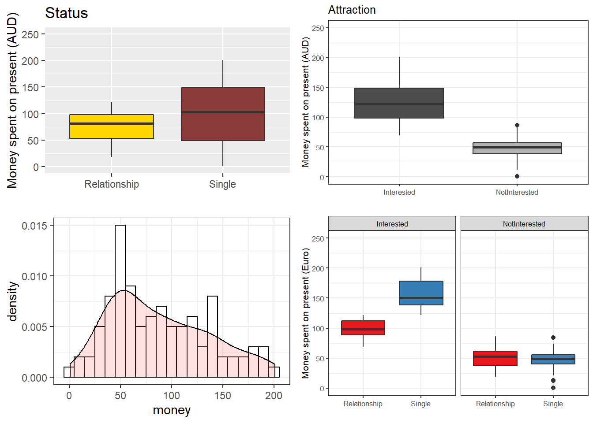
The upper left figure consists of a boxplot which shows how much money was spent based on the relationship status of the moan. The figure suggests that men spend more on women who are not in a relationship. The next figure shows the relationship between the money spend on presents and whether or not the men were interested in the women.
The boxplot in the upper right panel suggests that men spend substantially more on women if the men are interested in them. The next figure depicts the distribution of the amounts of money spend on women. In addition, the figure indicates the existence of two outliers (dots in the boxplot)
The histogram in the lower left panel shows that, although the mean amount of money spent on presents is 88.38 dollars, the distribution peaks around 50 dollars indicating that on average, men spend about 50 dollars on presents. Finally, we will plot the amount of money spend on presents against relationship status by attraction in order to check whether the money spent on presents is affected by an interaction between attraction and relationship status.
The boxplot in the lower right panel confirms the existence of an interaction (a non-additive term) as men only spend more money on single women if the men are interested in the women. If men are not interested in the women, then the relationship has no effect as they spend an equal amount of money on the women regardless of whether they are in a relationship or not.
We will now start to implement the regression model. In a first step, we initialize four base-line models: two minimal base-line models that only use the intercept as their sole predictor and two saturated base-line models that contain all possible predictors. The model pairs are generated with the lm and the glm function as these functions offer different model parameters in their output.
m0.mlr = lm( # generate regression object using the lm function
money ~ 1, # define rgression formula (1 = intercept)
data = mlrdata) # define data set
m0.glm = glm( # generate regression object using the glm function
money ~ 1, # define rgression formula (1 = intercept)
family = gaussian, # define linkage function
data = mlrdata) # define data set
m1.mlr = lm( # generate regression object using the lm function
money ~ (status + attraction)^2, # define rgression formula
data = mlrdata) # define data set
m1.glm = glm( # generate regression object using the glm function
money ~ status * attraction, # define rgression formula
family = gaussian, # define linkage function
data = mlrdata) # define data setAfter generating the saturated base-line models we can now start with the model fitting. Model fitting refers to a process that aims at find the model that explains a maximum of variance with a minimum of predictors (cf. A. Field, Miles, and Field 2012, 318). Model fitting is therefore based on the principle of parsimony which is related to Occam’s razor according to which explanations that require fewer assumptions are more likely to be true.
1.2 Automatic Model Fitting
In this section, we will use a step-wise step-down procedure that uses decreases in AIC (Akaike information criterion) as the criterion to minimize the model in a step-wise manner. This procedure aims at finding the model with the lowest AIC values by evaluating - step-by-step - whether the removal of a predictor (term) leads to a lower AIC value.
The AIC is calculated using the equation below. The lower the AIC value, the better the balance between explained variance and the number of predictors. AIC values can and should only be compared for models that are fit on the same dataset with the same (number of) cases (\(LL\) stands for LogLikelihood and \(k\) represents the number of predictors in the model).
\[\begin{equation} -2LL + 2k \label{eq:aic} \end{equation}\]Interactions are evaluated first and only if all interactions have been removed would the procedure start removing main effects. Other model fitting procedures (forced entry, step-wise step up, hierarchical) are discussed during the implementation of other regression models. We cannot discuss all procedures here as model fitting is rather complex and a discussion of even the most common procedures would to lengthy and time consuming at this point. It is important to note though that there is not perfect model fitting procedure and automated approaches should be handled with care as they are likely to ignore violations of model parameters that can be detected during manual - but time consuming - model fitting procedures. As a general rule of thumb, it is advisable to fit models as carefully and deliberately as possible. We will now begin to fit the model.
step(m1.mlr, direction = "both") # automated AIC based model fitting## Start: AIC=592.5
## money ~ (status + attraction)^2
##
## Df Sum of Sq RSS AIC
## <none> 34558 593
## - status:attraction 1 24947 59505 645##
## Call:
## lm(formula = money ~ (status + attraction)^2, data = mlrdata)
##
## Coefficients:
## (Intercept)
## 99.2
## statusSingle
## 57.7
## attractionNotInterested
## -47.7
## statusSingle:attractionNotInterested
## -63.2The automated model fitting procedure informs us that removing predictors ahs not caused a decrease in the AIC. The saturated model is thus also the final minimal adequate model. We will now inspect the final minimal model and go over the model report.
m2.mlr = lm( # generate regression object using the lm function
money ~ (status + attraction)^2, # define regression formula
data = mlrdata) # define data set
m2.glm = glm( # generate regression object using the glm function
money ~ (status + attraction)^2, # define regression formula
family = gaussian, # define linkage function
data = mlrdata) # define data set
summary(m2.mlr) # inspect final minimal model##
## Call:
## lm(formula = money ~ (status + attraction)^2, data = mlrdata)
##
## Residuals:
## Min 1Q Median 3Q Max
## -45.08 -14.26 0.46 11.93 44.14
##
## Coefficients:
## Estimate Std. Error t value
## (Intercept) 99.15 3.79 26.13
## statusSingle 57.69 5.37 10.75
## attractionNotInterested -47.66 5.37 -8.88
## statusSingle:attractionNotInterested -63.18 7.59 -8.32
## Pr(>|t|)
## (Intercept) < 0.0000000000000002 ***
## statusSingle < 0.0000000000000002 ***
## attractionNotInterested 0.000000000000038 ***
## statusSingle:attractionNotInterested 0.000000000000581 ***
## ---
## Signif. codes: 0 '***' 0.001 '**' 0.01 '*' 0.05 '.' 0.1 ' ' 1
##
## Residual standard error: 19 on 96 degrees of freedom
## Multiple R-squared: 0.852, Adjusted R-squared: 0.847
## F-statistic: 184 on 3 and 96 DF, p-value: <0.0000000000000002The first element of the report is called Call and it reports the regression formula of the model. Then, the report provides the residual distribution (the range, median and quartiles of the residuals) which allows drawing inferences about the distribution of differences between observed and expected values. If the residuals are distributed unevenly, then this is a strong indicator that the model is unstable and unreliable because mathematical assumptions on which the model is based are violated.
Next, the model summary reports the most important part: a table with model statistics of the fixed-effects structure of the model. The table contains the estimates (coefficients of the predictors), standard errors, t-values, and the p-values which show whether a predictor significantly correlates with the dependent variable that the model investigates.
All main effects (status and attraction) as well as the interaction between status and attraction is reported as being significantly correlated with the dependent variable (money). An interaction occurs if a correlation between the dependent variable and a predictor is affect by another predictor.
The top most term is called intercept and has a value of 99.15 which represents the base estimate to which all other estimates refer. To exemplify what this means, let us consider what the model would predict a man would spend on a present for a women who is single but the man is not attracted to her: The amount he would spend (based on the model would be 99.15 dollars (the intercept) plus 57.69 dollars (because she is single) minus 47.66 dollars (because he is not interested in her) minus 63.18 dollars because of the interaction between status and attraction.
#intercept Single NotInterested Single:NotInterested
99.15 + 57.69 + 0 + 0 # 156.8 single + interested ## [1] 156.899.15 + 57.69 - 47.66 - 63.18 # 46.00 single + not interested## [1] 4699.15 - 0 + 0 - 0 # 99.15 relationship + interested## [1] 99.1599.15 - 0 - 47.66 - 0 # 51.49 relationship + not interested## [1] 51.49Interestingly, the model predicts that a man would invest even less money in a woman that he is not interested in if she were single compared to being in a relationship! We can derive the same results easier using the predict function.
prediction <- predict(m2.mlr, # make prediction based on the model
newdata = mlrdata) # for original data
table(round(prediction,2)) # inspect predictions##
## 46.01 51.49 99.15 156.85
## 25 25 25 25Below the table of coefficient, the summary reports model statistics that provide information about how well the model performs. The difference between the values and the values in the coefficients table is that the model statistics refer to the model as a whole rather than focusing on individual predictors.
The multiple R2-value is a measure of how much variance the model explains. A multiple R2-value of 0 would inform us that the model does not explain any variance while a value of .852 mean that the model explains 85.2 percent of the variance. A value of 1 would inform us that the model explains 100 percent of the variance and that the predictions of the model match the observed values perfectly. Multiplying the multiple R2-value thus provides the percentage of explained variance. Models that have a multiple R2-value equal or higher than .05 are deemed substantially significant (cf Szmrecsanyi 2006, 55). It has been claimed that models should explain a minimum of 5 percent of variance but this is problematic as itis not uncommon for models to have very low explanatory power while still performing significantly and systematically better than chance. In addition, the total amount of variance is negligible in cases where one is interested in very weak but significant effects. It is much more important for model to perform significantly better than minimal base-line models because if this is not the case, then the model does not have any predictive and therefore no explanatory power.
The adjusted R2-value considers the amount of explained variance in light of the number of predictors in the model (it is thus somewhat similar to the AIC and BIC) and informs about how well the model would perform if it were applied to the population that the sample is drawn from. Ideally, the difference between multiple and adjusted R2-value should be very small as this means that the model is not overfitted. If, however, the difference between multiple and adjusted R2-value is substantial, then this would strongly suggest that the model is instable and overfitted to the data while being inadequate for drawing inferences about the population. Differences between multiple and adjusted R2-values indicate that the data contains outliers that cause the distribution of the data on which the model is based to differ from the distributions that the model mathematically requires to provide reliable estimates. The difference between multiple and adjusted R2-value in our model is very small (85.2-84.7=.05) and should not cause concern.
Before continuing, we will calculate the confidence intervals of the coefficients.
confint(m2.mlr) # extract confidence intervals of the coefficients## 2.5 % 97.5 %
## (Intercept) 91.62 106.69
## statusSingle 47.04 68.34
## attractionNotInterested -58.31 -37.01
## statusSingle:attractionNotInterested -78.24 -48.11anova(m0.mlr, m2.mlr) # compare baseline- and minimal adequate model## Analysis of Variance Table
##
## Model 1: money ~ 1
## Model 2: money ~ (status + attraction)^2
## Res.Df RSS Df Sum of Sq F Pr(>F)
## 1 99 233562
## 2 96 34558 3 199005 184 <0.0000000000000002 ***
## ---
## Signif. codes: 0 '***' 0.001 '**' 0.01 '*' 0.05 '.' 0.1 ' ' 1Now, we compare the final minimal adequate model to the base-line model to test whether then final model significantly outperforms the baseline model.
Anova(m0.mlr, m2.mlr, type = "III") # compare baseline- and minimal adequate model## Anova Table (Type III tests)
##
## Response: money
## Sum Sq Df F value Pr(>F)
## (Intercept) 781016 1 331 <0.0000000000000002 ***
## Residuals 34558 96
## ---
## Signif. codes: 0 '***' 0.001 '**' 0.01 '*' 0.05 '.' 0.1 ' ' 1The comparison between the two model confirms that the minimal adequate model performs significantly better (makes significantly more accurate estimates of the outcome variable) compared with the baseline model.
1.3 Outlier Detection
After implementing the multiple regression, we now need to look for outliers and perform the model diagnostics by testing whether removing data points disproportionately decreases model fit. To begin with, we generate diagnostic plots.
# start plotting
par(mfrow = c(1, 4)) # display plots in 3 rows and 2 columns
plot(m2.mlr) # plot fitted values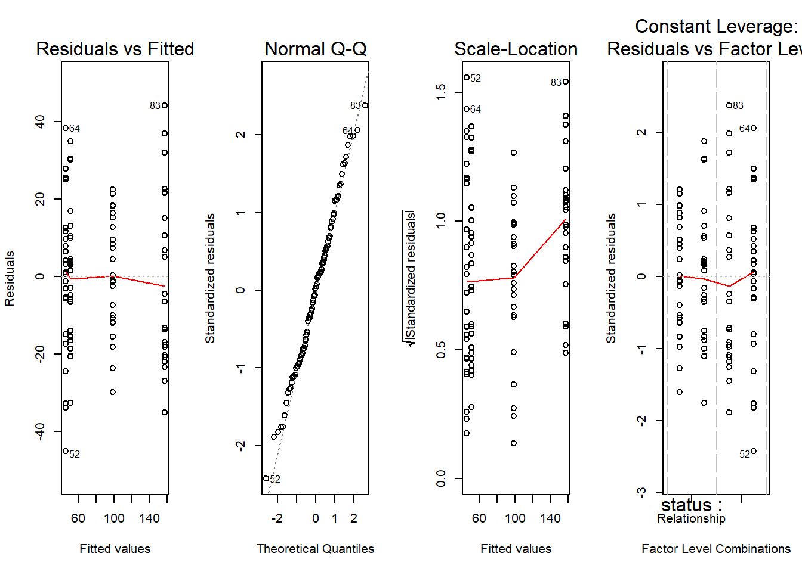
par(mfrow = c(1, 1)) # restore original 1 plot per row and column settings# determine a cutoff for data points that have D-values higher than 4/(n-k-1)
cutoff <- 4/((nrow(mlrdata)-length(m2.mlr$coefficients)-2))
# start plotting
par(mfrow = c(1, 2)) # display plots in 3 rows and 2 columns
qqPlot(m2.mlr, main="QQ Plot") # cerate qq-plot## [1] 52 83plot(m2.mlr, which=4, cook.levels = cutoff) # plot cook*s distance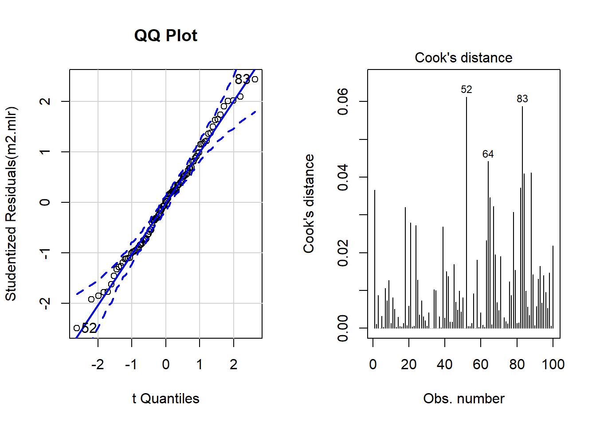
par(mfrow = c(1, 1)) # restore original 1 plot per row and column settingsThe graphs indicate that data points 52, 64, and 83 may be problematic. We will therefore statistically evaluate whether these data points need to be removed. In order to find out which data points require removal, we extract the influence measure statistics and add them to out data set.
infl <- influence.measures(m2.mlr) # extract influence statistics
mlrdata <- data.frame(mlrdata, infl[[1]], infl[[2]]) # add infl. statistics to data
# annotate too influential data points
remove <- apply(infl$is.inf, 1, function(x) {
ifelse(x == TRUE, return("remove"), return("keep")) } )
mlrdata <- data.frame(mlrdata, remove) # add annotation to data
nrow(mlrdata) # number of rows before removing outliers## [1] 100mlrdata <- mlrdata[mlrdata$remove == "keep", ] # remove outliers
nrow(mlrdata) # number of rows after removing outliers## [1] 98The difference in row in the data set before and after removing data points indicate that two data points which represented outliers have been removed.
1.4 Rerun Regression
As we have a different data set now, we need to rerun the regression analysis. As the steps are identical to the regression analysis performed above, the steps will not be described in greater detail.
m0.mlr = lm( # generate regression object using the lm function
money ~ 1, # define regression formula (1 = intercept)
data = mlrdata) # define data set
m0.glm = glm( # generate regression object using the glm function
money ~ 1, # define regression formula (1 = intercept)
family = gaussian, # define linkage function
data = mlrdata) # define data set
m1.mlr = lm( # generate regression object using the lm function
money ~ (status + attraction)^2, # define regression formula
data = mlrdata) # define data set
m1.glm = glm( # generate regression object using the glm function
money ~ status * attraction, # define regression formula
family = gaussian, # define linkage function
data = mlrdata) # define data set
step(m1.mlr, direction = "both") # automated AIC based model fitting## Start: AIC=570.3
## money ~ (status + attraction)^2
##
## Df Sum of Sq RSS AIC
## <none> 30411 570
## - status:attraction 1 21647 52058 621##
## Call:
## lm(formula = money ~ (status + attraction)^2, data = mlrdata)
##
## Coefficients:
## (Intercept)
## 99.2
## statusSingle
## 55.9
## attractionNotInterested
## -47.7
## statusSingle:attractionNotInterested
## -59.5m2.mlr = lm( # generate regression object using the lm function
money ~ (status + attraction)^2, # define regression formula
data = mlrdata) # define data set
m2.glm = glm( # generate regression object using the glm function
money ~ status * attraction, # define regression formula
family = gaussian, # define linkage function
data = mlrdata) # define data set
summary(m2.mlr) # inspect final minimal model##
## Call:
## lm(formula = money ~ (status + attraction)^2, data = mlrdata)
##
## Residuals:
## Min 1Q Median 3Q Max
## -35.76 -13.51 -0.99 10.60 38.77
##
## Coefficients:
## Estimate Std. Error t value
## (Intercept) 99.15 3.60 27.56
## statusSingle 55.85 5.14 10.87
## attractionNotInterested -47.66 5.09 -9.37
## statusSingle:attractionNotInterested -59.46 7.27 -8.18
## Pr(>|t|)
## (Intercept) < 0.0000000000000002 ***
## statusSingle < 0.0000000000000002 ***
## attractionNotInterested 0.000000000000004 ***
## statusSingle:attractionNotInterested 0.000000000001338 ***
## ---
## Signif. codes: 0 '***' 0.001 '**' 0.01 '*' 0.05 '.' 0.1 ' ' 1
##
## Residual standard error: 18 on 94 degrees of freedom
## Multiple R-squared: 0.857, Adjusted R-squared: 0.853
## F-statistic: 188 on 3 and 94 DF, p-value: <0.0000000000000002confint(m2.mlr) # extract confidence intervals of the coefficients## 2.5 % 97.5 %
## (Intercept) 92.01 106.30
## statusSingle 45.65 66.06
## attractionNotInterested -57.76 -37.56
## statusSingle:attractionNotInterested -73.89 -45.03anova(m0.mlr, m2.mlr) # compare baseline with final model## Analysis of Variance Table
##
## Model 1: money ~ 1
## Model 2: money ~ (status + attraction)^2
## Res.Df RSS Df Sum of Sq F Pr(>F)
## 1 97 213227
## 2 94 30411 3 182816 188 <0.0000000000000002 ***
## ---
## Signif. codes: 0 '***' 0.001 '**' 0.01 '*' 0.05 '.' 0.1 ' ' 1Anova(m0.mlr, m2.mlr, type = "III") # compare baseline with final model## Anova Table (Type III tests)
##
## Response: money
## Sum Sq Df F value Pr(>F)
## (Intercept) 760953 1 346 <0.0000000000000002 ***
## Residuals 30411 94
## ---
## Signif. codes: 0 '***' 0.001 '**' 0.01 '*' 0.05 '.' 0.1 ' ' 11.5 Additional Model Diagnostics
After rerunning the regression analysis on the updated data set, we again cerate diagnostic plots in order to check whether there are potentially problematic data points.
# start plotting
par(mfrow = c(2, 2)) # display plots in 2 rows and 2 columns
plot(m2.mlr) # plot fitted values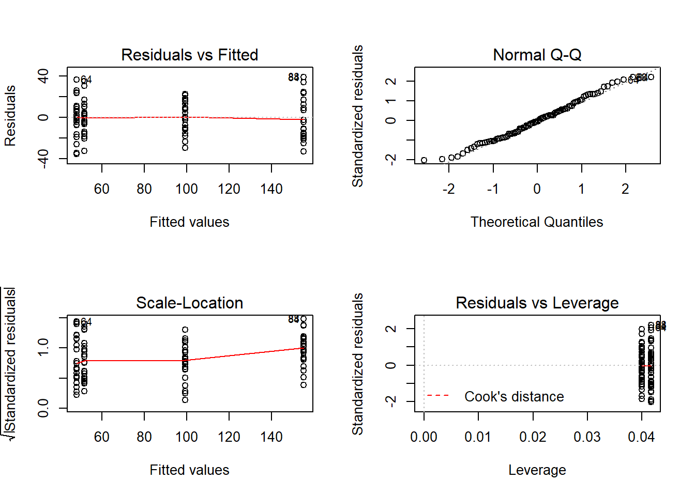
par(mfrow = c(1, 1)) # restore original 1 plot per row and column settings# determine a cutoff for data points that have D-values higher than 4/(n-k-1)
cutoff <- 4/((nrow(mlrdata)-length(m2.mlr$coefficients)-2))
# start plotting
par(mfrow = c(1, 2)) # display plots in 1 row and 2 columns
qqPlot(m2.mlr, main="QQ Plot") # cerate qq-plot## 84 88
## 82 86plot(m2.mlr, which=4, cook.levels = cutoff) # plot cook*s distancepar(mfrow = c(1, 1)) # restore original 1 plot per row and column settingsAlthough the diagnostic plots indicate that additional points may be problematic, but these data points deviate substantially less from the trend than was the case with the data points that have already been removed. To make sure that retaining the data points that are deemed potentially problematic by the diagnostic plots, is acceptable, we extract diagnostic statistics and add them to the data.
# addieren von modelldiagnostiken zum datasatz
mlrdata$residuals <- resid(m2.mlr)
mlrdata$standardized.residuals <- rstandard(m2.mlr)
mlrdata$studentized.residuals <- rstudent(m2.mlr)
mlrdata$cooks.distance <- cooks.distance(m2.mlr)
mlrdata$dffit <- dffits(m2.mlr)
mlrdata$leverage <- hatvalues(m2.mlr)
mlrdata$covariance.ratios <- covratio(m2.mlr)
mlrdata$fitted <- m2.mlr$fitted.valuesWe can now use these diagnostic statistics to create more precise diagnostic plots.
# plot 5
p5 <- ggplot(mlrdata,
aes(studentized.residuals)) +
theme(legend.position = "none") +
theme_set(theme_bw(base_size = 8))+ # define theme (black and white theme)
geom_histogram(aes(y=..density..),
binwidth = 1,
colour="black",
fill="white") +
labs(x = "Studentized Residual", y = "Density") +
stat_function(fun = dnorm,
args = list(mean = mean(mlrdata$studentized.residuals, na.rm = TRUE),
sd = sd(mlrdata$studentized.residuals, na.rm = TRUE)),
colour = "red", size = 1)
# plot 6
p6 <- ggplot(mlrdata, aes(fitted, studentized.residuals)) +
geom_point() +
geom_smooth(method = "lm", colour = "Red")+
theme_set(theme_bw(base_size = 8))+ # define theme (black and white theme)
labs(x = "Fitted Values",
y = "Studentized Residual")
# plot 7
p7 <- qplot(sample = mlrdata$studentized.residuals, stat="qq") +
theme_set(theme_bw(base_size = 8))+ # define theme (black and white theme)
labs(x = "Theoretical Values",
y = "Observed Values")
multiplot(p5, p6, p7, cols = 3)
The new diagnostic plots do not indicate outliers that require removal. With respect to such data points the following parameters should be considered:
Data points with standardised residuals > 3.29 should be removed (A. Field, Miles, and Field 2012, 269)
If more than 1 percent of data points have standardized residuals exceeding values > 2.58, then the error rate of the model is inacceptable (A. Field, Miles, and Field 2012, 269).
If more than 5 percent of data points have standardized residuals exceeding values > 1.96, then the error rate of the model is inacceptable (A. Field, Miles, and Field 2012, 269)
In addition, data points with Cook’s D-values > 1 should be removed (A. Field, Miles, and Field 2012, 269)
Also, data points with leverage values \(3(k + 1)/n\) (k = Number of predictors, N = Number of cases in model) should be removed (A. Field, Miles, and Field 2012, 270)
There should not be (any) autocorrelation among predictors. This means that independent variables cannot be correlated with itself (for instance, because data points come from the same subject). If there is autocorrelation among predictors, then a Repeated Measures Design or a (hierarchical) mixed-effects model should be implemented instead.
Predictors cannot substantially correlate with each other (multicollinearity). If a model contains predictors that have variance inflation factors (VIF) > 10 the model is completely unreliable (Myers 1990) and predictors causing such VIFs should be removed. Indeed, even VIFs of 2.5 can be problematic (Szmrecsanyi 2006, 215) and (Zuur, Ieno, and Elphick 2010) proposes that variables with VIFs exceeding 3 should be removed!
Data points with 1/VIF values \(<\) .1 must be removed (data points with values above .2 are considered problematic) (Menard 1995).
The mean value of VIFs should be \(<\) 1 (Bowerman and O’Connell 1990).
# 1: optimal = 0
# (aufgelistete datenpunkte sollten entfernt werden)
which(mlrdata$standardized.residuals > 3.29)## integer(0)# 2: optimal = 1
# (listed data points should be removed)
stdres_258 <- as.vector(sapply(mlrdata$standardized.residuals, function(x) {
ifelse(sqrt((x^2)) > 2.58, 1, 0) } ))
(sum(stdres_258) / length(stdres_258)) * 100## [1] 0# 3: optimal = 5
# (listed data points should be removed)
stdres_196 <- as.vector(sapply(mlrdata$standardized.residuals, function(x) {
ifelse(sqrt((x^2)) > 1.96, 1, 0) } ))
(sum(stdres_196) / length(stdres_196)) * 100## [1] 6.122# 4: optimal = 0
# (listed data points should be removed)
which(mlrdata$cooks.distance > 1)## integer(0)# 5: optimal = 0
# (data points should be removed if cooks distance is close to 1)
which(mlrdata$leverage >= (3*mean(mlrdata$leverage)))## integer(0)# 6: checking autocorrelation:
# Durbin-Watson test (optimal: grosser p-wert)
dwt(m2.mlr)## lag Autocorrelation D-W Statistic p-value
## 1 -0.01433 1.968 0.64
## Alternative hypothesis: rho != 0# 7: test multicolliniarity 1
vif(m2.mlr)## status attraction status:attraction
## 2.00 1.96 2.96# 8: test multicolliniarity 2
1/vif(m2.mlr)## status attraction status:attraction
## 0.5000 0.5102 0.3378# 9: mean vif should not exceed 1
mean(vif(m2.mlr))## [1] 2.307Except for the mean VIF value (2.307) which should not exceed 1, all diagnostics are acceptable. We will now test whether the sample size is sufficient for our model. With respect to the minimal sample size and based on (Green 1991), (A. Field, Miles, and Field 2012, 273–74) offer the following rules of thumb (k = number of predictors; categorical predictors with more than two levels should be recoded as dummy variables):
1.6 Evaluation of Sample Size
After performing the diagnostics, we will now test whether the sample size is adequate and what the values of R would be based on a random distribution in order to be able to estimate how likely a \(\beta\)-error is given the present sample size (cf. A. Field, Miles, and Field 2012, 274). Beta errors (or \(\beta\)-errors) refer to the erroneous assumption that a predictor is not significant (based on the analysis and given the sample) although it does have an effect in the population. In other words, \(\beta\)-error means to overlook a significant effect because of weaknesses of the analysis. The test statistics ranges between 0 and 1 where lower values are better. If the values approximate 1, then there is serious concern as the model is not reliable given the sample size. In such cases, unfortunately, the best option is to increase the sample size.
smplesz(m2.mlr) # check if sample size is sufficient## [1] "Sample too small: please increase your sample by 9 data points"expR(m2.mlr) # check for beta-error likelihood ## [1] "Based on the sample size expect a false positive correlation of 0.0309 between the predictors and the predicted"The function smplesz reports that the sample size is insufficient by 9 data points according to (Green 1991). The likelihood of \(\beta\)-errors, however, is very small (0.0309). As a last step, we summarize the results of the regression analysis.
mlrsummary <- mlr.summary(m2.mlr, m2.glm, ia = T) # tabulate regression results
mlrsummary[,-c(4:5)]## Estimate VIF CI(2.5%) t value
## (Intercept) 99.15 92.1 27.56
## statusSingle 55.85 2 45.78 10.87
## attractionNotInterested -47.66 1.96 -57.63 -9.37
## statusSingle:attractionNotInterested -59.46 2.96 -73.71 -8.18
## Model statistics
## Number of cases in model
## Residual Standard Error on 94 DF
## Multiple R2
## Adjusted R2
## AIC
## BIC
## F-statistic DF: 3 and 94
## Pr(>|t|) Significance
## (Intercept) 0 p < .001***
## statusSingle 0 p < .001***
## attractionNotInterested 0 p < .001***
## statusSingle:attractionNotInterested 0 p < .001***
## Model statistics Value
## Number of cases in model 98
## Residual Standard Error on 94 DF 17.99
## Multiple R2 0.857
## Adjusted R2 0.853
## AIC 850.4
## BIC 863.32
## F-statistic p-value: 0 p < .001***(Falls signifikante Interaktionen vorliegen, sollten die Haupteffekte der Prädikatoren, die an der/n Interaktion/en beteiligt sind, nicht interpretiert werden. Sie werden hier dennoch interpretiert, um zu verdeutlichen, wie die Ergebnisse einer multiplen linearen Regression verschriftlicht werden können.)
The results of the regression analysis can be summarized as follows:
A multiple linear regression was fitted to the data in a step-wise step-down, AIC-based (Akaike’s Information Criterion) procedure to the data and arrived at a final minimal model. During the model diagnostics, two outliers were detected and removed. Further diagnostics did not find other issues after the removal. The final minimal adequate regression model is based on 98 data points and performs highly significantly better than a minimal baseline model (Multiple R2: .857, Adjusted R2: .853, F-statistic (3, 94): 154.4, AIC: 850.4, BIC: 863.32, p<.001\(***\)). The final minimal adequate regression model reports attraction and status as significant main effects. The relationship status of women correlates highly significantly and positively with the amount of money spend on the women’s presents (SE: 5.14, t-value: 10.87, p<.001\(***\)). This shows that men spend 156.8 dollars on presents are single while they spend 99,15 dollars if the women are in a relationship. Whether men are attracted to women also correlates highly significantly and positively with the money they spend on women (SE: 5.09, t-values: -9.37, p<.001\(***\)). If men are not interested in women, they spend 47.66 dollar less on a present for women compared with women the men are interested in.
Furthermore, the final minimal adequate regression model reports a highly significant interaction between relationship status and attraction (SE: 7.27, t-value: -8.18, p<.001\(***\)): If women are single but man are not interested in them, men spend 59.46 dollars less on their presents compared to all other constellations.
1.7 Exercises
- Download the data set called
exdatamlrfromhttp://martinschweinberger.de/docs/data/exdatamlr.txtand apply what you have learned by implementing a multiple linear regression model so that you can answer how movement (move) and food intake (food) affect weight (given the data at hand).
2 Linear Mixed-Effects Regression Models
The following focuses on an extension of ordinary multiple linear regressions: mixed-effects regression linear regression. Mixed-effects models have the following advantages over simpler statistical tests:
Mixed-effects models are multivariate, i.e. they test the effect of several predictors simultaneously while controlling for the effect of all other predictors.
Mixed models allow to statistically incorporate within-speaker variability and are thus fit to model hierarchical data structures.
Mixed-models provide a wealth of diagnostic statistics which enables us to control e.g. multicollinearity, i.e. correlations between predictors, and to test whether conditions or requirements are violated (e.g. homogeneity of variance, etc.).
Major disadvantages of mixed-effects regression modelling are that they are prone to producing β-errors (cf. Johnson 2009) and that they require rather large data sets.
2.1 Introduction
So far, the regression models that we have used only had fixed-effects. having only fixed-effects means that all data points are treated as if they are completely independent and thus on the same hierarchical level. However, it is very common, that the data is nested in the sense that data points are not independent because they are, for instance produced by the same speaker or are grouped by some other characteristic. In such cases, the data is considered hierarchical and statistical models should incorporate such structural features of the data they work upon. With respect to regression modelling, hierarchical structures are incorporated by what is called random effects. When models only have a fixed-effects structure, then they make use of only a single intercept and/or slope (as in the left panel in the figure below), while mixed effects models have intercepts for each level of a random effect. If the random effect structure represents speakers then this would mean that a mixed-model would have a separate intercept and or slope for each speaker.
# random intercepts and random slops
x <- 0:10
y = 0:10
# start plot
par(mfrow = c(1, 4))
# intercepts
plot(x, y, type = "n", xaxt='n', yaxt='n', ylab='Weight', xlab = "Height", xlim = c(0, 10), ylim = c(-5, 10))
axis(2, seq(-5,10, 5), seq(50, 110, 20))
abline(0, 1, lty = 1, col ="black")
mtext("Fixed-Effects Model:\n1 Intercept + 1 Slope", 1, 2, cex = .6)
box()
# random intercepts
plot(x, y, type = "n", xaxt='n', yaxt='n', ann=FALSE, xlim = c(0, 10), ylim = c(-5, 10))
abline(4, 1, col ="black")
abline(2, 1, col ="black")
abline(2, 1, col ="black")
abline(0, 1, col ="black")
abline(-1, 1, col ="black")
abline(-2, 1, col ="black")
abline(-4, 1, col ="black")
mtext("Mixed-Effects Model:\n1 Intercept per Random Effect Level\n+ 1 Slope", 1, 3, cex = .6)
box()
# random slopes
plot(x, y, type = "n", xaxt='n', yaxt='n', ann=FALSE, xlim = c(0, 10), ylim = c(-5, 10))
abline(0, 1.75, col ="black")
abline(0, 1.5, col ="black")
abline(0, 1.25, col ="black")
abline(0, 0, col ="black")
abline(0, -.25, col ="black")
abline(0, -.5, col ="black")
abline(0, -.75, col ="black")
mtext("Mixed-Effects Model:\n1 Intercept\n+ 1 Slope per Random Effect Level", 1, 3, cex = .6)
box()
# random slopesund random intercepts
plot(x, y, type = "n", xaxt='n', yaxt='n', ann=FALSE, xlim = c(0, 10), ylim = c(-5, 10))
abline(2, 1.75, col ="black")
abline(-1, 1.5, col ="black")
abline(1, 1.25, col ="black")
abline(4, 0, col ="black")
abline(-4, -.25, col ="black")
abline(0, -.5, col ="black")
abline(-1, -.75, col ="black")
mtext("Mixed-Effects Model:\n1 Intercept per Random Effect Level\n+ 1 Slope per Random Effect Level", 1, 3, cex = .6)
box()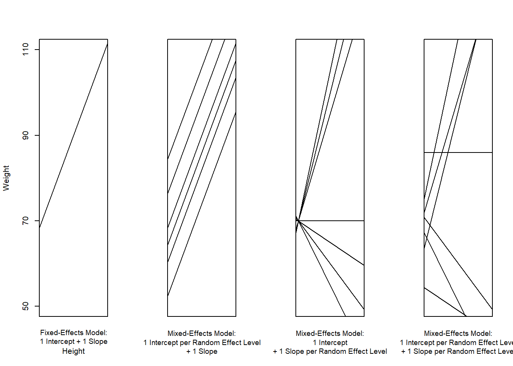
# restore original graphic's parameters
par(mfrow = c(1, 1))Random Effects have two parameters: the intercept (the point where the regression line cross the y-axis) and the slope (the acclivity of the regression line). In contrast to fixed-effects models have only 1 intercept and one slope (left panel of the Figure above) while mixed-effects models can have various random intercepts (centre left panel ) or various random slopes (centre right panel ), or both, various random intercepts and various random slopes (right panel ). In the following, we will only focus on models with random intercepts because this is the by far more common method and because including both random intercepts and random slopes requires huge amounts of data. Consider the Figure below to understand what is meant by “random intercepts”.
Height <- c(169, 176, 164, 160, 158, 173, 166, 161, 180, 187, 170, 177, 163, 161, 157)
Weight <- c(68, 72, 65, 62, 60, 80, 75, 70, 85, 92, 88, 92, 85, 82, 80) # plot scatterplot and the regression line
z <- c("a", "a", "a", "a", "a", "b", "b", "b", "b", "b", "c", "c", "c", "c", "c")
tb <- data.frame(Height,Weight, z)
a <- tb[z == "a", ]
a <- a[, 1:2]
b <- tb[z == "b", ]
b <- b[, 1:2]
c <- tb[z == "c", ]
c <- c[, 1:2]
d <- tb[, 1:2]
# plot
par(mfrow = c(1, 3))
# plot 1
plot(a, xlim = c(150, 200), ylim = c(50, 100))
text(b[,1], b[,2], "+")
text(c[,1], c[,2], "*")
# plot 2
plot(a, xlim = c(150, 200), ylim = c(50, 100))
mod0 <- lm(d$Weight ~ d$Height, data = d)
abline(mod0, lty=1, col = "black")
text(b[,1], b[,2], "+")
text(c[,1], c[,2], "*")
# plot 3
plot(a, xlim = c(150, 200), ylim = c(50, 100))
grid()
mod1 <- lm(a$Weight ~ a$Height, data = a)
abline(mod0, lty=1, col = "black")
abline(mod0[[1]][[1]]+10, mod0[[1]][[2]], lty = 2, col = "red")
abline(mod0[[1]][[1]]-10, mod0[[1]][[2]], lty = 3, col = "blue")
abline(mod0[[1]][[1]]-1, mod0[[1]][[2]], lty = 4, col = "green")
text(b[,1], b[,2], "+")
text(c[,1], c[,2], "*")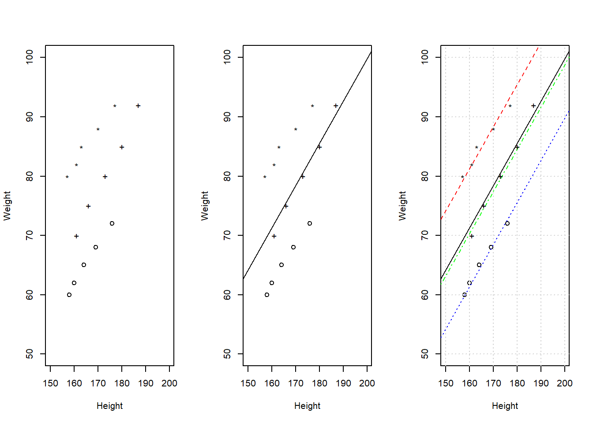
par(mfrow = c(1, 1))The left panel merely shows the data while the centre panel includes the regression line for a regression that estimates Weight based on Height. The right panel shows the regression line and, in addition, random intercepts each of the three groups.
After adding random intercepts, predictors (or fixed effects) are added to the model (just like with multiple regression). So mixed-effects are called mixed-effects because they contain both random and fixed effects.
In terms of general procedure, random effects are added first, and only after we have ascertained that including random effects is warranted, we test whether including fixed-effects is warranted (vgl. A. Field, Miles, and Field 2012). We test whether including random effects is warranted by comparing a model, that bases its estimates of the depended variable solely on the base intercept (the mean), with a model, that bases its estimates of the dependent variable solely on the intercepts of the random effect. If the random-effect model explains significantly more variance than the simple model without random effect structure, then we continue with the mixed-effects model. In other words, including random effects is justified if they reduce residual deviance.
2.2 Example: Preposition Use across Time by Genre
To explore how to implement a mixed-effects model in R we revisit the preposition data that contains relative frequencies of prepositions in English texts written between 1150 and 1913. As a first step, and to prepare our analysis, we load necessary R packages, specify options, and load as well as provide an overview of the data.
# activate packages
library(RLRsim)
#library(car)
#library(QuantPsyc)
#library(boot)
library(nlme)
library(lme4)
#library(ez)
library(ggplot2)
# set options
options("scipen" = 100, "digits" = 4) # supress scientific notation
options(stringsAsFactors = F) # do not convert strings into factors
mydata <- read.delim("data/lmemdata.txt", header = TRUE) # read in data
mydata$date <- as.numeric(mydata$date) # convert date into a numeric variable
head(mydata); nrow(mydata) # inspect updated data set## date genre text pptw region
## 1 1736 SCIENCE_OTHER albin 166.0 north
## 2 1711 EDUC_TREATISE anon 139.9 north
## 3 1808 LETTERS_PRIV austen 130.8 north
## 4 1878 EDUC_TREATISE bain 151.3 north
## 5 1743 EDUC_TREATISE barclay 145.7 north
## 6 1908 EDUC_TREATISE benson 120.8 north## [1] 537The data set contains the date when the text was written (date), the genre of the text (genre), the name of the text (text), the relative frequency of prepositions in the text (pptw), and the region in which the text was written (region). We now plot the data to get a first impression of its structure.
# visualize variables (2 plots per row)
# 3 plots in 1 window
def.par <- par(no.readonly = TRUE)
nf <- layout(matrix(c(1, 1, 2, 3), 2, 2, byrow = T))
plot(mydata$pptw ~ mydata$date, ylab = "Frequency", xlab = "year of publication")
abline(lm(mydata$pptw ~ mydata$date), lty = 3, lwd = 2, col = "red")
# re-set margins to fit the labels
par(mar = c(7.2, 4, 1, 2) + 0.1)
# reorder genre by median
genrebymedian <- with(mydata, reorder(genre, -pptw, median))
# generate plots
plot(mydata$pptw ~ genrebymedian,
col = "lightgrey",
ylab = "Frequency",
xlab = "",
las = 2,
cex.axis = .7,
cex = .5)
# re-set margins
par(mar = c(5, 4, 1, 2) + 0.1)
x = mydata$pptw
h = hist(mydata$pptw,
ylim =c(0, 150),
xlim = c(50, 200),
xlab = "prepositions per text",
col = "lightgrey",
main = "")
xfit <- seq(min(mydata$pptw), max(mydata$pptw), length = 40)
yfit <- dnorm(xfit, mean = mean(mydata$pptw),sd = sd(mydata$pptw))
yfit <- yfit*diff(h$mids[1:2])*length(x)
lines(xfit, yfit, lty = 2, lwd=2)
# restore original graphic's parameters
par(def.par)The scatter plot in the upper panel indicates that the use of prepositions has moderately increased over time while the boxplots in the lower left panel show that the genres differ quite substantially with respect to their median frequencies of prepositions per text. Finally, the histogram in the lower right panel show that preposition use is distributed normally with a mean of 132.2 prepositions per text.
# plot 8
p8 <- ggplot(mydata, aes(date, pptw)) +
geom_point() +
labs(x = "Year") +
labs(y = "Prepositions per 1,000 words") +
geom_smooth(method = "lm") +
theme_set(theme_bw(base_size = 10))
# plot 9
p9 <- ggplot(mydata, aes(region, pptw)) +
geom_boxplot() +
labs(x = "Region") +
labs(y = "Prepositions per 1,000 words") +
geom_smooth(method = "lm") # with linear model smoothing!
# include genre (lowess)
multiplot(p8, p9, cols = 2)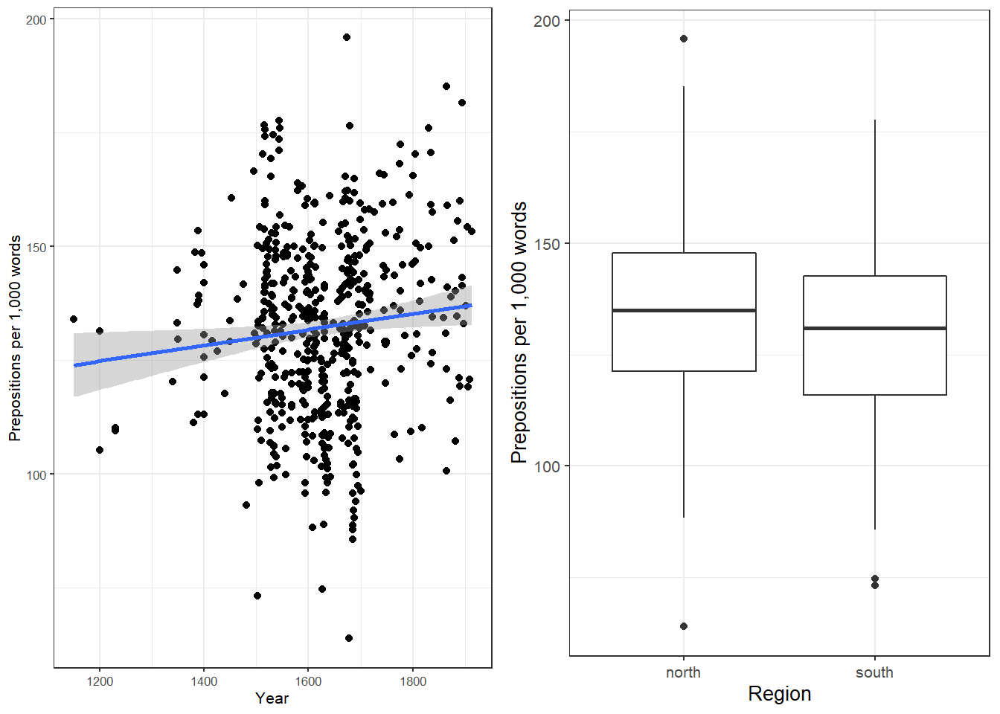
ggplot(mydata, aes(date, pptw)) +
geom_point() +
facet_wrap(~ genre, nrow = 4) +
geom_smooth(method = "lm") +
theme_bw() +
labs(x = "Year") +
labs(y = "Prepositions per 1,000 words") +
coord_cartesian(ylim = c(0, 220))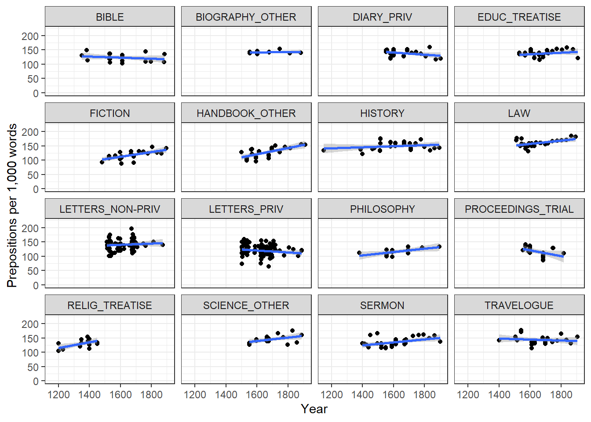
Centering or scaling numeric variables is useful for later interpretation of regression models: if the date variable was not centered, the regression would show the effects of variables at year 0(!). If numeric variables are scaled, other variables are variables are considered relative not to 0 but to the mean of that variable (in this case the mean of years in our data). Centering simply means that the mean of the numeric variable is subtracted from each value.
mydata$date <- scale(mydata$date, scale = F)
head(mydata)## date genre text pptw region
## 1 109.87 SCIENCE_OTHER albin 166.0 north
## 2 84.87 EDUC_TREATISE anon 139.9 north
## 3 181.87 LETTERS_PRIV austen 130.8 north
## 4 251.87 EDUC_TREATISE bain 151.3 north
## 5 116.87 EDUC_TREATISE barclay 145.7 north
## 6 281.87 EDUC_TREATISE benson 120.8 northstr(mydata)## 'data.frame': 537 obs. of 5 variables:
## $ date : num [1:537, 1] 109.9 84.9 181.9 251.9 116.9 ...
## ..- attr(*, "scaled:center")= num 1626
## $ genre : chr "SCIENCE_OTHER" "EDUC_TREATISE" "LETTERS_PRIV" "EDUC_TREATISE" ...
## $ text : chr "albin" "anon" "austen" "bain" ...
## $ pptw : num 166 140 131 151 146 ...
## $ region: chr "north" "north" "north" "north" ...# generate a glm baseline model
m0.glm <- glm(pptw ~ 1, family = gaussian, data = mydata)
# generate a lm base-line model
m0.lm <- lm(pptw ~ 1, data = mydata)
# set up first lme model including only the random effect specifying the random intercepts
m0.lme = lme(pptw ~ 1, random = ~1|genre, data = mydata, method = "ML")
# set up first lmer model including only the random effect specifying the random intercepts
m0.lmer = lmer(pptw ~ 1 + (1|genre), data = mydata, REML = F)2.3 Testing Random Effects
As a first step in the modelling process, we now need to determine whether or not including a random effect structure is justified. We do so by comparing the base-line model without random intercepts to the model with random intercepts using a Likelihood Ratio Test. A short word of warning is in order here regarding the specific of the model: we need to set REML = T because Relative Estimate Maximum Likelihood (REML) provides better estimates for the random effects part of the model compared with the simpler Maximum Likelihood (ML) specification (cf. Field, Miles & Field 2012:879).
x2 = -2*logLik(m0.lm, REML = T)+2*logLik(m0.lmer, REML = T)
x2 <- x2 <- x2[[1]]
list(x2, pchisq(x2, df=2, lower.tail=F))## [[1]]
## [1] 220.9
##
## [[2]]
## [1] 0.000000000000000000000000000000000000000000000001082The inclusion of a random effect structure with random intercepts is justified based on the Likelihood Ratio Test.
However, we also want to test which random effects structure is the best. We therefore create several models with different random effect structures and compare these models to see which random effect structure has the highest explanatory power.
We generate a m0.lmer model but using the lmer function from the lme4 package. When we compare models, the REML specification must be FALSE or set to method = "ML" (Maximum Likelihood) (depending on the function) when we use ANOVAs to compare models (cf. Field, Miles & Field 2012:). This is because “ML produces more accurate estimates of fixed regression parameters, whereas REML produces more accurate estimates of random variances (Twisk 2006). […] Also, if you want to compare models you must use ML” (Field, Miles & Field 2012:879).
m0.lmer1 <- lmer(pptw ~ (1|genre) + 1, data = mydata, REML = T)
m0.lmer2 <- lmer(pptw ~ (1|region) + 1, data = mydata, REML = T)
m0.lmer3 <- lmer(pptw ~ (1|genre/region) + 1, data = mydata, REML = T)
anova(m0.lmer1, m0.lmer2, m0.lmer3)## Data: mydata
## Models:
## m0.lmer1: pptw ~ (1 | genre) + 1
## m0.lmer2: pptw ~ (1 | region) + 1
## m0.lmer3: pptw ~ (1 | genre/region) + 1
## Df AIC BIC logLik deviance Chisq Chi Df Pr(>Chisq)
## m0.lmer1 3 4502 4515 -2248 4496
## m0.lmer2 3 4719 4731 -2356 4713 0 0 1
## m0.lmer3 4 4501 4518 -2246 4493 220 1 <0.0000000000000002 ***
## ---
## Signif. codes: 0 '***' 0.001 '**' 0.01 '*' 0.05 '.' 0.1 ' ' 1# the model with the random effect structure (1|genre/region) performs
# significantly better (also it has a much lower AIC and deviance)
# therefore, m0.lmer3 is our new m0 model
m0.lmer <- m0.lmer3
# test if including the random effect is permitted by applying a restricted likelihood ratio test
# WARNING: this test can only take simple random effect (1|genre) but not
# (1|genre/date)
exactRLRT(m0.lmer1)##
## simulated finite sample distribution of RLRT.
##
## (p-value based on 10000 simulated values)
##
## data:
## RLRT = 220, p-value <0.0000000000000002# there is another way to compare model with and without random effects: see below!
# create a second model with date as a fixed effect
# m1.lme <- lme(m0.lme, .~. + date) # alternative way to update the model
m1.lme = lme(pptw ~ date, random = ~1|genre/region, data = mydata, method = "ML")
# set up m1 model but using the lmer function from the lme4 package
m1.lmer = lmer(pptw ~ (1|genre/region) + date, data = mydata, REML = F)
# compare the models to see if including date has improved the model
# the difference between the models is the effect (size) of date!
anova(m0.lme, m1.lme)## Model df AIC BIC logLik Test L.Ratio p-value
## m0.lme 1 3 4502 4515 -2248
## m1.lme 2 5 4496 4517 -2243 1 vs 2 10.12 0.0063# m1.lme is the better model (sig. p-value & lower AIC)
# date correlates significantly with pptw (X2(1) = 8.81, p = .003);
# X2 = L.Ratio;
# df = subtract df smaller from df larger model
# inspect results
summary(m1.lme)## Linear mixed-effects model fit by maximum likelihood
## Data: mydata
## AIC BIC logLik
## 4496 4517 -2243
##
## Random effects:
## Formula: ~1 | genre
## (Intercept)
## StdDev: 12.05
##
## Formula: ~1 | region %in% genre
## (Intercept) Residual
## StdDev: 3.453 14.97
##
## Fixed effects: pptw ~ date
## Value Std.Error DF t-value p-value
## (Intercept) 133.95 3.183 505 42.09 0.0000
## date 0.02 0.007 505 2.70 0.0071
## Correlation:
## (Intr)
## date 0.003
##
## Standardized Within-Group Residuals:
## Min Q1 Med Q3 Max
## -3.74687 -0.66308 0.01827 0.64043 3.62269
##
## Number of Observations: 537
## Number of Groups:
## genre region %in% genre
## 16 31# alternative display of the results
anova(m1.lme)## numDF denDF F-value p-value
## (Intercept) 1 505 1770.7 <.0001
## date 1 505 7.3 0.0071# test if date is significant
anova(m0.lmer, m1.lmer)## Data: mydata
## Models:
## m0.lmer: pptw ~ (1 | genre/region) + 1
## m1.lmer: pptw ~ (1 | genre/region) + date
## Df AIC BIC logLik deviance Chisq Chi Df Pr(>Chisq)
## m0.lmer 4 4501 4518 -2246 4493
## m1.lmer 5 4496 4517 -2243 4486 7.03 1 0.008 **
## ---
## Signif. codes: 0 '***' 0.001 '**' 0.01 '*' 0.05 '.' 0.1 ' ' 1# extract estimates and sd for fixed and random effects
intervals(m1.lme)## Approximate 95% confidence intervals
##
## Fixed effects:
## lower est. upper
## (Intercept) 127.713505 133.95499 140.19647
## date 0.004896 0.01787 0.03083
## attr(,"label")
## [1] "Fixed effects:"
##
## Random Effects:
## Level: genre
## lower est. upper
## sd((Intercept)) 8.19 12.05 17.73
## Level: region
## lower est. upper
## sd((Intercept)) 1.172 3.453 10.17
##
## Within-group standard error:
## lower est. upper
## 14.07 14.97 15.932.4 Model Diagnostics
We can now evaluate the goodness of fit of the model and check if mathematical requirements and assumptions have been violated. In a first step, we generate diagnostic plots that focus on the random effect structure.
plot(m1.lme, genre ~ resid(.), abline = 0 ) # generate diagnostic plots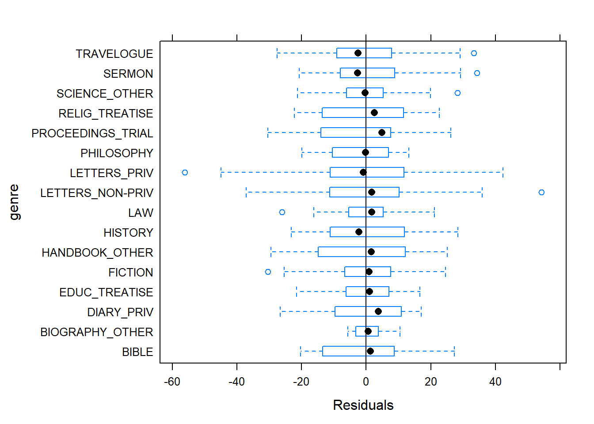
The plot shows that there are some outliers (points outside the boxes) and that the variability within letters is greater than in other genres we therefore examine the genres in isolation standardized residuals versus fitted values (Pinheiro & Bates 2000:175).
plot(m1.lme, resid(., type = "p") ~ fitted(.) | genre, id = 0.05, adj = -0.3)
The plot showing the standardized residuals versus fitted values confirms that there are outliers in the letters because there are obviously differences in the variance, we create a new model which uses weights to compensate heterogeneity of variance (cf. Pinheiro & Bates 2000:177).
m2.lme <- update(m1.lme, weights = varIdent(form = ~ 1 | genre))
# test if m2.lme is more appropriate for the data than m1.lme
anova(m1.lme, m2.lme)## Model df AIC BIC logLik Test L.Ratio p-value
## m1.lme 1 5 4496 4517 -2243
## m2.lme 2 20 4483 4569 -2222 1 vs 2 42.75 0.0002The heteroscedastic model (i.e. m2.lme which uses weights to account for unequal variance) is performing significantly better than the homoscedasticity model m1.lme. We therefore inspect the results of the new heteroscedastic model.
summary(m2.lme) # inspect results## Linear mixed-effects model fit by maximum likelihood
## Data: mydata
## AIC BIC logLik
## 4483 4569 -2222
##
## Random effects:
## Formula: ~1 | genre
## (Intercept)
## StdDev: 12.14
##
## Formula: ~1 | region %in% genre
## (Intercept) Residual
## StdDev: 4.183 13.89
##
## Variance function:
## Structure: Different standard deviations per stratum
## Formula: ~1 | genre
## Parameter estimates:
## BIBLE BIOGRAPHY_OTHER DIARY_PRIV EDUC_TREATISE
## 1.0000 0.3582 0.8994 0.7324
## FICTION HANDBOOK_OTHER HISTORY LAW
## 0.8895 1.1417 1.0185 0.7591
## LETTERS_NON-PRIV LETTERS_PRIV PHILOSOPHY PROCEEDINGS_TRIAL
## 1.2641 1.2302 0.7753 1.2262
## RELIG_TREATISE SCIENCE_OTHER SERMON TRAVELOGUE
## 1.0108 0.8293 0.9821 1.0663
## Fixed effects: pptw ~ date
## Value Std.Error DF t-value p-value
## (Intercept) 134.01 3.209 505 41.76 0.0000
## date 0.02 0.006 505 3.36 0.0008
## Correlation:
## (Intr)
## date 0.002
##
## Standardized Within-Group Residuals:
## Min Q1 Med Q3 Max
## -3.29018 -0.67307 0.03261 0.64633 3.08450
##
## Number of Observations: 537
## Number of Groups:
## genre region %in% genre
## 16 31anova(m2.lme) # ANOVA display of the results## numDF denDF F-value p-value
## (Intercept) 1 505 1743.6 <.0001
## date 1 505 11.3 0.0008anova(m0.lme, m2.lme) # test if date is significant## Model df AIC BIC logLik Test L.Ratio p-value
## m0.lme 1 3 4502 4515 -2248
## m2.lme 2 20 4483 4569 -2222 1 vs 2 52.87 <.0001intervals(m2.lme) # extract estimates and sd for fixed and random effects## Approximate 95% confidence intervals
##
## Fixed effects:
## lower est. upper
## (Intercept) 127.719320 134.01179 140.30426
## date 0.008414 0.02022 0.03203
## attr(,"label")
## [1] "Fixed effects:"
##
## Random Effects:
## Level: genre
## lower est. upper
## sd((Intercept)) 8.253 12.14 17.87
## Level: region
## lower est. upper
## sd((Intercept)) 2.092 4.183 8.363
##
## Variance function:
## lower est. upper
## BIOGRAPHY_OTHER 0.2233 0.3582 0.5747
## DIARY_PRIV 0.6532 0.8994 1.2385
## EDUC_TREATISE 0.5210 0.7324 1.0295
## FICTION 0.6426 0.8895 1.2312
## HANDBOOK_OTHER 0.8170 1.1417 1.5955
## HISTORY 0.7583 1.0185 1.3682
## LAW 0.5499 0.7591 1.0480
## LETTERS_NON-PRIV 0.9974 1.2641 1.6020
## LETTERS_PRIV 0.9907 1.2302 1.5276
## PHILOSOPHY 0.4907 0.7753 1.2250
## PROCEEDINGS_TRIAL 0.8344 1.2262 1.8019
## RELIG_TREATISE 0.6776 1.0108 1.5078
## SCIENCE_OTHER 0.5702 0.8293 1.2063
## SERMON 0.7351 0.9821 1.3121
## TRAVELOGUE 0.7574 1.0663 1.5012
## attr(,"label")
## [1] "Variance function:"
##
## Within-group standard error:
## lower est. upper
## 11.62 13.89 16.612.5 Effect Sizes
We will now extract effect sizes (in the example: the effect size of date) and calculate normalized effect size measures (this effect size measure works for all fixed effects). To calculate the effect size, take the square root of the squared t-value divided by the t-value squared plus the degrees of freedom:
r = sqrt(t^2^/(t^2^+df)).
A brief word of warning is in order here: only apply this function to main effects not involved in interactions as they are meaningless because the amount of variance explained by main effects involved in interactions is unclear (cf. Field, Miles & Field 2012:641).
ef.lme <- function(x) {
df <- summary(x)[[20]][6]
t <- summary(x)[[20]][8]
#df <- summary(x)$tTable[, 3]
#t <- summary(x)$tTable[, 4]
r <- sqrt((t^2)/((t^2)+df))
return(paste("Pearson's r = ", round(r, 3)))
}
ef.lme(m2.lme)## [1] "Pearson's r = 0.148"We now generate another m1 model but we use the lmer function from the lme4 package rather than the glmer function.
m2.lmer = lmer(pptw ~ (1|genre/region) + date, data = mydata, REML = F)
summary(m2.lmer)## Linear mixed model fit by maximum likelihood ['lmerMod']
## Formula: pptw ~ (1 | genre/region) + date
## Data: mydata
##
## AIC BIC logLik deviance df.resid
## 4496 4517 -2243 4486 532
##
## Scaled residuals:
## Min 1Q Median 3Q Max
## -3.747 -0.663 0.018 0.640 3.623
##
## Random effects:
## Groups Name Variance Std.Dev.
## region:genre (Intercept) 11.9 3.45
## genre (Intercept) 145.2 12.05
## Residual 224.1 14.97
## Number of obs: 537, groups: region:genre, 31; genre, 16
##
## Fixed effects:
## Estimate Std. Error t value
## (Intercept) 133.9550 3.1768 42.17
## date 0.0179 0.0066 2.71
##
## Correlation of Fixed Effects:
## (Intr)
## date 0.003We now calculate the variance explained when only a simple random effect is involved. This is done by dividing the variance of the random effect (145.2) by variance of random effect plus residual variance (145.2+224.1) times 100. The results represents the percentage of variance explained by the random effect: (145.2/(145.2+2284.1))*100.
Create lmer with complex random effect structure
An alternative for testing if including the random intercepts is permitted.
WARNING: this method is not as good as applying a restricted likelihood ratio test(!) because the p-value is only an approximation IMPORTANT: the second model is a glm object
m2.lmer = lmer(pptw ~ (1|genre/region) + date, data = mydata, REML = F)
2*pchisq(2*as.numeric(logLik(m2.lmer)-logLik(m0.glm)), 2, lower.tail = FALSE)## [1] 0.000000000000000000000000000000000000000000000000051592.6 Rerun Model Diagnostics
Diagnostic plot (Pinheiro & Bates 2000:11, 182) what we wish to see: a cloud of dots in the middle of the window without structure what we do not want to see: a funnel-shaped cloud because this indicates an increase of the errors/residuals with an increase of the predictor(s) (because this would indicate heteroscedasticity) in short: observed values against fitted values (cf. Pinheiro & Bates 2000:182)
# start plotting
par(mfrow = c(2, 2)) # display plots in 2 rows and 2 columns
plot(m2.lme)par(mfrow = c(1, 1))# diagnostic plot (Pinheiro & Bates 2000:21)
plot(m2.lme, form = resid(., type = "p") ~ fitted(.) | genre, abline = 0, cex = .5)
# diagnostic plot: residuals of fitted values against observed values (cf. Pinheiro & Bates 2000:182)
qqnorm(m2.lme)# normal plot of the estimated date %in% genre random effects
qqnorm(m2.lme, ~ranef(., level = 2), id = 0.05, cex = 0.7, xlim = c(-40, 40))
# diagnostic plot: normal plots of the residuals by genre (cf. Pinheiro & Bates 2000:22, 179)
qqnorm(m2.lme, ~resid(.) | genre )# inspect the observed responses versus the within-group fitted values
# (cf. Pinheiro & Bates 2000:178)
plot(m2.lme, pptw ~ fitted(.), id = 0.05, adj = -0.3, xlim = c(80, 220), cex = .8)
2.7 Reporting Results
summary(m2.lmer)## Linear mixed model fit by maximum likelihood ['lmerMod']
## Formula: pptw ~ (1 | genre/region) + date
## Data: mydata
##
## AIC BIC logLik deviance df.resid
## 4496 4517 -2243 4486 532
##
## Scaled residuals:
## Min 1Q Median 3Q Max
## -3.747 -0.663 0.018 0.640 3.623
##
## Random effects:
## Groups Name Variance Std.Dev.
## region:genre (Intercept) 11.9 3.45
## genre (Intercept) 145.2 12.05
## Residual 224.1 14.97
## Number of obs: 537, groups: region:genre, 31; genre, 16
##
## Fixed effects:
## Estimate Std. Error t value
## (Intercept) 133.9550 3.1768 42.17
## date 0.0179 0.0066 2.71
##
## Correlation of Fixed Effects:
## (Intr)
## date 0.0033 Multiple Binomial Logistic Regression
Logistic regression is a multivariate analysis technique that builds on and is very similar in terms of its implementation to linear regression but logistic regressions take dependent variables that represent nominal rather than numeric scaling. The difference requires that the linear regression must be modified in certain ways to avoid producing non-sensical outcomes. The most fundamental difference between logistic and linear regressions is that logistic regression work on the probabilities of an outcome (the likelihood), rather than the outcome itself. In addition, the likelihoods on which the logistic regression works must be logged (logarithmized) in order to avoid produce predictions that produce values greater than 1 (instance occurs) and 0 (instance does not occur).
To understand what this mean, we will use a very simple example. In this example, we want to see whether the height of men affect their likelihood of being in a relationship. The data we use represents a data set consisting of two variables: height and relationship.
bodyheight=rnorm(20,180,10) # generates 20 values, with mean of 30 & s.d.=2
bodyheight=sort(bodyheight) # sorts these values in ascending order.
relationship=c(0,0,0,0,0,1,0,1,0,0,1,1,0,1,1,1,0,1,1,1) # assign 'survival' to these 20 individuals non-randomly... most mortality occurs at smaller body size
blrex=as.data.frame(cbind(bodyheight,relationship)) # saves data frame with two columns: body size & survival
library(knitr)
kable(blrex, caption = "Example data set representing the height and relationship status of a sample of men.")| bodyheight | relationship |
|---|---|
| 172.1 | 0 |
| 174.1 | 0 |
| 174.3 | 0 |
| 174.3 | 0 |
| 174.8 | 0 |
| 175.0 | 1 |
| 175.6 | 0 |
| 175.7 | 1 |
| 175.8 | 0 |
| 177.9 | 0 |
| 182.3 | 1 |
| 182.5 | 1 |
| 182.9 | 0 |
| 183.8 | 1 |
| 184.2 | 1 |
| 188.4 | 1 |
| 189.1 | 0 |
| 198.4 | 1 |
| 202.8 | 1 |
| 204.8 | 1 |
library(ggplot2) # activate library
# plot 1
p1 <- ggplot(blrex, # create plot based on blrex
aes(bodyheight, relationship)) + # define x- and y-axes
geom_point() + # plot dots
geom_smooth(method = "lm", se = F) + # draw linear regression line
labs(x = "Height") + # x-axis label
labs(y = "Relationship", cex = .75) + # y-axis label
theme_set(theme_bw(base_size = 8))+ # define theme (black and white theme)
coord_cartesian(ylim = c(-0.2, 1.2), xlim = c(160, 200)) + # axes range
scale_y_continuous(breaks=seq(0, 1, 1), labels = c("Not in Relationship", "In Relationship")) +
guides(fill = FALSE) # supress legend
# plot 2
p2 <- ggplot(blrex, aes(x=bodyheight, y=relationship)) +
geom_point() + # plot dots
geom_smooth(method = "glm", # draw regression line
method.args = list(family = "binomial"), # draw binomial regression line
se = FALSE) + # supress errorband
coord_cartesian(ylim = c(-0.2, 1.2), xlim = c(160, 200)) + # axes range
labs(x = "Height") + # x-axis label
scale_y_continuous(breaks=seq(0, 1, 1), labels = c("Not in Relationship", "In Relationship")) +
labs(y = "Relationship", cex = .75) # y-axis label
multiplot(p1, p2, cols = 2) # draw two plots in one window
The left panel of the Figure above shows that a linear model would predict values for the relationship status, which represents a factor (0 = Not in Relationship and 1 = In Relationship), that are non-sensical because 1.1 does not make sense if the only options are 0 OR 1. The logistic function shown in the right panel of the Figure above solves this problem by working on the logged probabilities of an outcome rather than on the actual outcome.
3.1 Example 1: Eh in Kiwi English
To exemplify hot to implement a logistic regression in R, we will analyse the use of the discourse particle eh in New Zealand English and test which factors correlate with its occurrence. The data set represents speech units in a corpus that were coded for the speaker who uttered a given speech unit, the gender, ethnicity, and age of that speaker and whether or not the speech unit contained an eh. To begin with, we clean the current work space, set option, install and activate relevant packages, load customized functions, and load the example data set.
rm(list=ls(all=T)) # clean workspace
options("scipen" = 100, "digits" = 4) # set options (supress math annotation)
#install.packages(effects) # install effects package (remove # to activate)
#install.packages(ggplot2) # install ggplot2 package (remove # to activate)
#install.packages(mlogit) # install mlogit package (remove # to activate)
#install.packages(plyr) # install plyr package (remove # to activate)
#install.packages(rms) # install rms package (remove # to activate)
#install.packages(sjPlot) # install sjPlot package (remove # to activate)
#install.packages(visreg) # install visreg package (remove # to activate)
library(effects) # activate effects package
library(ggplot2) # activate ggplot2 package
library(mlogit) # activate mlogit package
library(plyr) # activate plyr package
library(rms) # activate rms package
library(sjPlot) # activate sjPlot package
library(visreg) # activate visreg package
source("rscripts/multiplot_ggplot2.R") # load multiplot function
source("rscripts/blr.summary.R") # load function for summarizing blr results
blrdata <- read.table("data/blrdata.txt", # read in data blrdata.txt
comment.char = "", # the data does not contain comments
quote = "", # the data does not contain quotes
sep = "\t", # the data is tab separetd
header = T) # the variables have headers
str(blrdata)## 'data.frame': 25821 obs. of 5 variables:
## $ ID : chr "<S1A-001#M>" "<S1A-001#M>" "<S1A-001#M>" "<S1A-001#M>" ...
## $ Gender : chr "Men" "Men" "Men" "Men" ...
## $ Age : chr "Young" "Young" "Young" "Young" ...
## $ Ethnicity: chr "Pakeha" "Pakeha" "Pakeha" "Pakeha" ...
## $ EH : int 0 1 0 0 1 1 0 0 0 1 ...The summary of the data show that the data set contains 25,821 observations of five variables. The variable ID contains strings that represent a combination file and speaker of a speech unit. The second variable represents the gender, the third the age, and the fourth the ethnicity of speakers. The fifth variable represents whether or not a speech unit contained the discourse particle eh. The first six lines of the data set are shown in the Table below.
library(knitr)
kable(head(blrdata), caption = "First six line of the blrdata data set.")| ID | Gender | Age | Ethnicity | EH |
|---|---|---|---|---|
| Men | Young | Pakeha | 0 | |
| Men | Young | Pakeha | 1 | |
| Men | Young | Pakeha | 0 | |
| Men | Young | Pakeha | 0 | |
| Men | Young | Pakeha | 1 | |
| Men | Young | Pakeha | 1 |
Next, we factorize the variables in our data set. In other words, we specify that the strings represent variable levels and define new reference levels because as a default R will use the variable level which first occurs in alphabet ordering as the reference level for each variable, we redefine the variable levels for Age and Ethnicity.
vrs <- c("Age", "Gender", "Ethnicity", "ID") # define variables to be factorized
fctr <- which(colnames(blrdata) %in% vrs) # define vector with variables
blrdata[,fctr] <- lapply(blrdata[,fctr], factor) # factorize variables
blrdata$Age <- relevel(blrdata$Age, "Young") # relevel Age (Young = Reference)
blrdata$Ethnicity <- relevel( # relevel Ethnicity
blrdata$Ethnicity, "Pakeha") # define Pakeha as Reference level)After preparing the data, we will now plot the data to get an overview of potential relationships between variables.
p1 <- ggplot(blrdata, # cerate plot based on blrdata
aes(Gender, EH, color = Gender)) + # define axes and colouring factor
stat_summary(fun.y = mean, geom = "point") + # define statistics for points
stat_summary(fun.y = mean, geom = "line") + # define statistics for error bars
stat_summary(fun.data = mean_cl_boot, # define statistics for error bars
geom = "errorbar", width = 0.2) + # define statistics for error bars
coord_cartesian(ylim = c(0, 0.5)) + # define y-axis range
theme_set(theme_bw(base_size = 10)) + # define theme
labs(x = "Gender", y = "Probability of EH")+ # define axes label
guides(fill=FALSE, color=FALSE) + # supress legend
scale_color_manual(values = c("blue", "red")) # define colours
p2 <- ggplot(blrdata, # cerate plot based on blrdata
aes(Age, EH, color = Age)) + # define axes and colouring factor
stat_summary(fun.y = mean, geom = "point") + # define statistics for points
stat_summary(fun.y = mean, geom = "line") + # define statistics for error bars
stat_summary(fun.data = mean_cl_boot, # define statistics for error bars
geom = "errorbar", width = 0.2) + # define statistics for error bars
coord_cartesian(ylim = c(0, 0.5)) + # define y-axis range
theme_set(theme_bw(base_size = 10)) + # define theme
labs(x = "Age", y = "Probability of EH") + # define axes labels
guides(fill=FALSE, color=FALSE) + # supress legend
scale_color_manual(values = c("darkblue", "lightblue"))
p3 <- ggplot(blrdata, # cerate plot based on blrdata
aes(Ethnicity, EH, colour = Ethnicity)) + # define axes and colouring factor
stat_summary(fun.y = mean, geom = "point") + # define statistics for points
stat_summary(fun.y = mean, geom = "line") + # define statistics for error bars
stat_summary(fun.data = mean_cl_boot, # define statistics for error bars
geom = "errorbar", width = 0.2) + # define statistics for error bars
coord_cartesian(ylim = c(0, 0.5)) + # define y-axis range
theme_set(theme_bw(base_size = 10)) + # define theme
labs(x = "Ethnicity", y = "Probability of EH", colour = "Ethnicity") + # define axes labels
guides(fill=FALSE, color=FALSE) + # supress legend
scale_color_manual(values = c("darkgreen", "lightgreen"))
p4 <- ggplot(blrdata, # cerate plot based on blrdata
aes(Ethnicity, EH, colour = Gender)) + # define axes and colouring factor
stat_summary(fun.y = mean, geom = "point") + # define statistics for points
stat_summary(fun.y = mean, geom = "line") + # define statistics for error bars
stat_summary(fun.data = mean_cl_boot, # define statistics for error bars
geom = "errorbar", width = 0.2) + # define statistics for error bars
coord_cartesian(ylim = c(0, 0.5)) + # define y-axis range
theme_set(theme_bw(base_size = 10)) + # define theme
labs(x = "Ethnicity", y = "Probability of EH", colour = "Gender")+ # define axes labels
scale_color_manual(values = c("blue", "red")) # define colours
p5 <- ggplot(blrdata, # cerate plot based on blrdata
aes(Gender, EH, colour = Age)) + # define axes and colouring factor
stat_summary(fun.y = mean, geom = "point", # define statistics for points
aes(group= Age)) + # define grouping factor
stat_summary(fun.y = mean, geom = "line") + # define statistics for error bars
stat_summary(fun.data = mean_cl_boot, # define statistics for error bars
geom = "errorbar", width = 0.2) + # define statistics for error bars
coord_cartesian(ylim = c(0, 0.5)) + # define y-axis range
theme_set(theme_bw(base_size = 10)) + # define theme
labs(x = "Sex", y = "Probability of EH", colour = "Age") + # define axes labels
guides(fill = FALSE) + # supress legend
scale_color_manual(values = c("darkblue", "lightblue"))
p6 <- ggplot(blrdata, # cerate plot based on blrdata
aes(Age, EH, colour = Ethnicity)) + # define axes and colouring factor
stat_summary(fun.y = mean, geom = "point", # define statistics for points
aes(group= Ethnicity)) + # define grouping factor
stat_summary(fun.y = mean, geom = "line") + # define statistics for error bars
stat_summary(fun.data = mean_cl_boot, # define statistics for error bars
geom = "errorbar", width = 0.2) + # define statistics for error bars
coord_cartesian(ylim = c(0, 0.5)) + # define y-axis range
theme_set(theme_bw(base_size = 10)) + # define theme
labs(x = "Age", y = "Probability of EH", colour = "Ethnicity") + # define axes labels
guides(fill = FALSE) + # supress legend
scale_color_manual(values = c("darkgreen", "lightgreen"))
# display the plots
multiplot(p1, p4, p2, p5, p3, p6, cols = 3)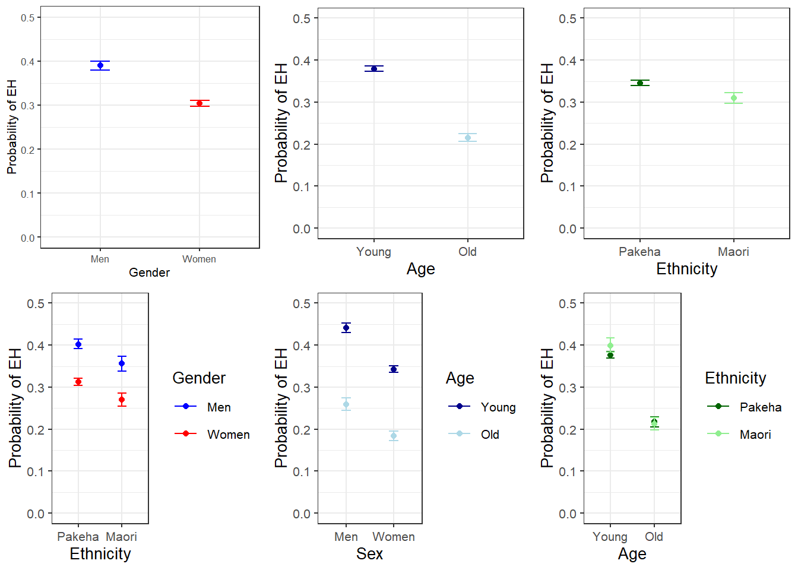
With respect to main effects, the Figure above indicates that men use eh more frequently than women, that young speakers sue it more frequently compared with old speakers, and that speakers that are descendants of European settlers (Pakeha) use eh more frequently compared with Maori (the native inhabitants of New Zealand).
The plots in the lower panels do not indicate significant interactions between use of eh and the Age, Gender, and Ethnicity of speakers. In a next step, we will start building the logistic regression model.
3.2 Model Building
As a first step, we need to define contrasts and add a distance matrix to the options. Contrasts define what should be tested and therefore has influence on how the results of the regression analysis are presented.
options(contrasts =c("contr.treatment", "contr.poly")) # set contrasts
blrdata.dist <- datadist(blrdata) # cerate distance matrix
options(datadist = "blrdata.dist") # include distance matrix in optionsNext, we generate four base-line models: two minimal models that predict the use of eh sole based on the intercept and two initial saturated regression models that include all variables and their interactions.
m0.glm = glm(EH ~ 1, family = binomial, data = blrdata) # baseline model glm
m0.lrm = lrm(EH ~ 1, data = blrdata, x = T, y = T) # baseline model lrm
m1.glm = glm(EH ~ Age*Gender*Ethnicity, family = binomial, data = blrdata)
m1.lrm = lrm(EH ~ Age*Gender*Ethnicity, data = blrdata, x = T, y = T)A few words on glm vs lrm: Baayen (2008:196-197) states that lrm should be the function of choice in cases where each row contains exactly 1 success OR failure (1 or 0) while glm is preferable if there are two columns holding the number of successes and the number of failures respectively. I have tried it both ways and both functions work fine if each row contains exactly 1 success OR failure but only glm can handle the latter case.
3.3 Model fitting
We will now start with the model building procedure. In the present case, we will use a manual step-wise step-down protocol during which predictors are removed from the model if they do not significantly to the model fit.
m2.glm <- update(m1.glm, . ~ . -Age:Gender:Ethnicity) # remove Age:Gender:Ethnicity
anova(m1.glm, m2.glm, test = "Chi") # did removal significantly decrease model fit## Analysis of Deviance Table
##
## Model 1: EH ~ Age * Gender * Ethnicity
## Model 2: EH ~ Age + Gender + Ethnicity + Age:Gender + Age:Ethnicity +
## Gender:Ethnicity
## Resid. Df Resid. Dev Df Deviance Pr(>Chi)
## 1 25813 32136
## 2 25814 32136 -1 -0.233 0.63The ANOVA shows that the fit of the saturated model (m1.glm) and the model without the interaction between Age, Gender, and Ethnicity (m2.glm) do not differ significantly. The lack of a significant difference is provided in the value of Pr(>Chi) (0.63) which is higher than .05. Because the models do not differ significantly, we continue with the smaller model (m3.glm) as this is the correct procedure based on the principle of parsimony.
m3.glm <- update(m2.glm, . ~ . -Gender:Ethnicity)
anova(m2.glm, m3.glm, test = "Chi")## Analysis of Deviance Table
##
## Model 1: EH ~ Age + Gender + Ethnicity + Age:Gender + Age:Ethnicity +
## Gender:Ethnicity
## Model 2: EH ~ Age + Gender + Ethnicity + Age:Gender + Age:Ethnicity
## Resid. Df Resid. Dev Df Deviance Pr(>Chi)
## 1 25814 32136
## 2 25815 32136 -1 -0.00569 0.94The ANOVA shows that the fit of the saturated model (m2.glm) and the model without the interaction between Gender and Ethnicity (m3.glm) do not differ significantly. The lack of a significant difference is provided in the value of Pr(>Chi) (0.94) which is higher than .05. Because the models do not differ significantly, we continue with the smaller model (m3.glm) as this is the correct procedure based on the principle of parsimony.
m4.glm <- update(m3.glm, . ~ . -Age:Gender)
anova(m3.glm, m4.glm, test = "Chi")## Analysis of Deviance Table
##
## Model 1: EH ~ Age + Gender + Ethnicity + Age:Gender + Age:Ethnicity
## Model 2: EH ~ Age + Gender + Ethnicity + Age:Ethnicity
## Resid. Df Resid. Dev Df Deviance Pr(>Chi)
## 1 25815 32136
## 2 25816 32136 -1 -0.226 0.63The ANOVA shows that the fit of the saturated model (m3.glm) and the model without the interaction between Age and Gender (m4.glm) do not differ significantly. The lack of a significant difference is provided in the value of Pr(>Chi) (0.63) which is higher than .05. Because the models do not differ significantly, we continue with the smaller model (m4.glm) as this is the correct procedure based on the principle of parsimony.
m5.glm <- update(m4.glm, . ~ . -Age:Ethnicity)
anova(m4.glm, m5.glm, test = "Chi")## Analysis of Deviance Table
##
## Model 1: EH ~ Age + Gender + Ethnicity + Age:Ethnicity
## Model 2: EH ~ Age + Gender + Ethnicity
## Resid. Df Resid. Dev Df Deviance Pr(>Chi)
## 1 25816 32136
## 2 25817 32139 -1 -2.81 0.094 .
## ---
## Signif. codes: 0 '***' 0.001 '**' 0.01 '*' 0.05 '.' 0.1 ' ' 1The ANOVA shows that the fit of the saturated model (m4.glm) and the model without the interaction between Age and Ethnicity (m5.glm) do not differ significantly. The lack of a significant difference is provided in the value of Pr(>Chi) (0.09) which is higher than .05. Because the models do not differ significantly, we continue with the smaller model (m5.glm) as this is the correct procedure based on the principle of parsimony.
m6.glm <- update(m5.glm, . ~ . -Ethnicity)
anova(m5.glm, m6.glm, test = "Chi")## Analysis of Deviance Table
##
## Model 1: EH ~ Age + Gender + Ethnicity
## Model 2: EH ~ Age + Gender
## Resid. Df Resid. Dev Df Deviance Pr(>Chi)
## 1 25817 32139
## 2 25818 32140 -1 -0.261 0.61The ANOVA shows that the fit of the saturated model (m5.glm) and the model without the main effect for Ethnicity (m6.glm) do not differ significantly. The lack of a significant difference is provided in the value of Pr(>Chi) (0.61) which is higher than .05. Because the models do not differ significantly, we continue with the smaller model (m6.glm) as this is the correct procedure based on the principle of parsimony.
m7.glm <- update(m6.glm, . ~ . -Gender)
anova(m7.glm, m6.glm, test = "Chi")## Analysis of Deviance Table
##
## Model 1: EH ~ Age
## Model 2: EH ~ Age + Gender
## Resid. Df Resid. Dev Df Deviance Pr(>Chi)
## 1 25819 32377
## 2 25818 32140 1 237 <0.0000000000000002 ***
## ---
## Signif. codes: 0 '***' 0.001 '**' 0.01 '*' 0.05 '.' 0.1 ' ' 1The ANOVA shows that the fit of the more saturated model (m6.glm) and the model without the main effect for Gender (m7.glm) differ significantly. The significant difference is provided in the value of Pr(>Chi) (<0.0000000000000002 ***) which is smaller than .05. Because the models differ significantly, we continue with the more saturated model (m6.glm) as this is the correct procedure based on the principle of parsimony.
m8.glm <- update(m6.glm, . ~ . -Age)
anova(m8.glm, m6.glm, test = "Chi")## Analysis of Deviance Table
##
## Model 1: EH ~ Gender
## Model 2: EH ~ Age + Gender
## Resid. Df Resid. Dev Df Deviance Pr(>Chi)
## 1 25819 32808
## 2 25818 32140 1 669 <0.0000000000000002 ***
## ---
## Signif. codes: 0 '***' 0.001 '**' 0.01 '*' 0.05 '.' 0.1 ' ' 1The ANOVA shows that the fit of the more saturated model (m6.glm) and the model without the main effect for Age (m8.glm) differ significantly. The significant difference is provided in the value of Pr(>Chi) (<0.0000000000000002 ***) which is smaller than .05. Because the models differ significantly, we continue with the more saturated model (m6.glm) as this is the correct procedure based on the principle of parsimony.
As we have now arrived at the final minimal adequate model (m6.glm), we generate a final minimal model using the lrm model.
m6.lrm <- lrm(EH ~ Age+Gender, data = blrdata, x = T, y = T, linear.predictors = T)
m6.lrm## Logistic Regression Model
##
## lrm(formula = EH ~ Age + Gender, data = blrdata, x = T, y = T,
## linear.predictors = T)
##
## Model Likelihood Discrimination Rank Discrim.
## Ratio Test Indexes Indexes
## Obs 25821 LR chi2 868.21 R2 0.046 C 0.602
## 0 17114 d.f. 2 g 0.432 Dxy 0.203
## 1 8707 Pr(> chi2) <0.0001 gr 1.541 gamma 0.302
## max |deriv| 3e-10 gp 0.091 tau-a 0.091
## Brier 0.216
##
## Coef S.E. Wald Z Pr(>|Z|)
## Intercept -0.2324 0.0223 -10.44 <0.0001
## Age=Old -0.8305 0.0335 -24.78 <0.0001
## Gender=Women -0.4201 0.0273 -15.42 <0.0001
## anova(m6.lrm)## Wald Statistics Response: EH
##
## Factor Chi-Square d.f. P
## Age 614.0 1 <.0001
## Gender 237.7 1 <.0001
## TOTAL 802.6 2 <.0001After fitting the model, we validate the model to avoid arriving at a final minimal model that is overfitted to the data at hand.
3.4 Model Validation
To validate the final minimal model, we apply the validate function and apply it to the initial saturated model. The output of the validate function shows how often predictors are retained if the sample is re-selected with the same size but with placing back the drawn data point. The execution of the function requires some patience as it is rather computationally expensive.
validate(m1.lrm, bw = T, B = 200) # model validation##
## Backwards Step-down - Original Model
##
## Deleted Chi-Sq d.f. P Residual d.f. P AIC
## Age * Gender 0.01 1 0.9346 0.01 1 0.9346 -1.99
## Gender * Ethnicity 0.05 1 0.8239 0.06 2 0.9723 -3.94
## Age * Gender * Ethnicity 0.41 1 0.5230 0.46 3 0.9267 -5.54
## Ethnicity 1.85 1 0.1735 2.32 4 0.6778 -5.68
## Age * Ethnicity 1.21 1 0.2711 3.53 5 0.6192 -6.47
##
## Approximate Estimates after Deleting Factors
##
## Coef S.E. Wald Z P
## Intercept -0.2324 0.02227 -10.44 0
## Age=Old -0.8301 0.03353 -24.76 0
## Gender=Women -0.4199 0.02725 -15.41 0
##
## Factors in Final Model
##
## [1] Age Gender## index.orig training test optimism index.corrected n
## Dxy 0.2032 0.2047 0.2036 0.0011 0.2021 200
## R2 0.0458 0.0462 0.0457 0.0005 0.0453 200
## Intercept 0.0000 0.0000 -0.0018 0.0018 -0.0018 200
## Slope 1.0000 1.0000 0.9963 0.0037 0.9963 200
## Emax 0.0000 0.0000 0.0011 0.0011 0.0011 200
## D 0.0336 0.0339 0.0335 0.0004 0.0332 200
## U -0.0001 -0.0001 0.0000 -0.0001 0.0000 200
## Q 0.0337 0.0340 0.0335 0.0005 0.0332 200
## B 0.2163 0.2162 0.2163 -0.0001 0.2164 200
## g 0.4323 0.4354 0.4330 0.0024 0.4300 200
## gp 0.0910 0.0915 0.0911 0.0004 0.0906 200
##
## Factors Retained in Backwards Elimination
##
## Age Gender Ethnicity Age * Gender Age * Ethnicity Gender * Ethnicity
## * * *
## * *
## * *
## * * *
## * *
## * *
## * *
## * * *
## * * * *
## * *
## * *
## * *
## * *
## * *
## * * *
## * *
## * *
## * *
## * *
## * *
## * * *
## * *
## * *
## * *
## * *
## * * *
## * *
## * *
## * * *
## * *
## * *
## * *
## * *
## * *
## * *
## * *
## * *
## * *
## * *
## * *
## * *
## * *
## * *
## * *
## * *
## * * *
## * *
## * * * *
## * *
## * *
## * *
## * *
## * * *
## * *
## * *
## * * *
## * * * * *
## * * *
## * *
## * *
## * *
## * *
## * *
## * *
## * *
## * * * *
## * *
## * *
## * *
## * *
## * *
## * *
## * * *
## * *
## * *
## * *
## * *
## * *
## * *
## * * *
## * *
## * * *
## * * *
## * *
## * *
## * *
## * * * * *
## * *
## * *
## * *
## * * *
## * * *
## * *
## * *
## * *
## * *
## * * *
## * *
## * *
## * *
## * *
## * *
## * *
## * * *
## * *
## * *
## * *
## * *
## * *
## * * *
## * *
## * *
## * *
## * *
## * *
## * * *
## * *
## * *
## * *
## * *
## * * *
## * * *
## * *
## * *
## * * * *
## * *
## * * * * *
## * *
## * * *
## * *
## * *
## * *
## * *
## * * *
## * *
## * * *
## * * *
## * *
## * *
## * *
## * * *
## * *
## * *
## * *
## * * * *
## * *
## * *
## * * * *
## * *
## * *
## * *
## * *
## * * * *
## * * * *
## * *
## * *
## * * *
## * * *
## * * * *
## * *
## * * * *
## * * * *
## * *
## * *
## * *
## * *
## * *
## * *
## * *
## * *
## * *
## * * *
## * *
## * *
## * *
## * * *
## * * * *
## * *
## * * * *
## * *
## * *
## * *
## * *
## * *
## * *
## * *
## * * *
## * * *
## * *
## * *
## * *
## * *
## * * * *
## * *
## * *
## * * * *
## * * *
## * * * * *
## * * *
## * *
## Age * Gender * Ethnicity
##
##
## *
##
##
##
##
##
##
## *
##
##
##
##
## *
##
##
##
##
##
## *
##
##
##
##
##
##
##
##
##
##
##
##
##
##
##
##
##
##
##
##
## *
##
##
##
##
##
##
##
##
##
##
## *
##
##
## *
##
## *
##
##
## *
##
##
##
##
##
##
##
## *
## *
##
##
## *
##
##
##
##
## *
##
##
##
##
## *
##
##
##
##
##
##
##
##
## *
##
##
##
##
##
##
##
##
##
##
##
##
##
##
##
##
##
##
##
##
##
##
##
##
##
##
##
##
##
##
##
##
##
##
## *
##
## *
##
##
##
##
##
##
## *
##
##
##
##
##
## *
##
##
##
##
##
##
##
##
##
##
##
##
##
## *
##
##
##
##
##
##
##
##
##
##
##
##
##
##
##
##
##
##
##
##
##
##
##
##
##
##
##
##
##
##
##
## *
## *
##
##
##
## *
##
##
##
##
##
##
##
##
## Frequencies of Numbers of Factors Retained
##
## 2 3 4 5 6
## 135 35 25 4 1The validate function shows that retaining two predictors (Age and Gender) is the best option and thereby confirms our final minimal adequate model as the best minimal model. In addition, we check whether we need to include a penalty for data points because they have too strong of an impact of the model fit. To see whether a penalty is warranted, we apply the pentrace function to the final minimal adequate model.
pentrace(m6.lrm, seq(0, 0.8, by = 0.05)) # determine penalty##
## Best penalty:
##
## penalty df
## 0.8 1.999
##
## penalty df aic bic aic.c
## 0.00 2.000 864.2 847.9 864.2
## 0.05 2.000 864.2 847.9 864.2
## 0.10 2.000 864.2 847.9 864.2
## 0.15 2.000 864.2 847.9 864.2
## 0.20 2.000 864.2 847.9 864.2
## 0.25 2.000 864.2 847.9 864.2
## 0.30 2.000 864.2 847.9 864.2
## 0.35 2.000 864.2 847.9 864.2
## 0.40 2.000 864.2 847.9 864.2
## 0.45 2.000 864.2 847.9 864.2
## 0.50 2.000 864.2 847.9 864.2
## 0.55 1.999 864.2 847.9 864.2
## 0.60 1.999 864.2 847.9 864.2
## 0.65 1.999 864.2 847.9 864.2
## 0.70 1.999 864.2 847.9 864.2
## 0.75 1.999 864.2 847.9 864.2
## 0.80 1.999 864.2 847.9 864.2The pentrace function proposes a penalty of .8 but the values are so similar that a penalty is unnecessary. In a next step, we rename the final models.
lr.glm <- m6.glm # rename final minimal adeqaute glm model
lr.lrm <- m6.lrm # rename final minimal adeqaute lrm modelNow, we calculate a Model Likelihood Ratio Test to check if the final model performs significantly better than the initial minimal base-line model. The result of this test is provided as a default if we call a summary of the lrm object.
modelChi <- lr.glm$null.deviance - lr.glm$deviance
chidf <- lr.glm$df.null - lr.glm$df.residual
chisq.prob <- 1 - pchisq(modelChi, chidf)
modelChi; chidf; chisq.prob## [1] 868.2## [1] 2## [1] 0The code above provides three values: a \(\chi\)2, the degrees of freedom, and a p-value. The p-value is lower than .05 and the results of the Model Likelihood Ratio Test therefore confirm that the final minimal adequate model performs significantly better than the initial minimal base-line model. Another way to extract the model likelihood test statistics is to use an ANOVA to compare the final minimal adequate model to the minimal base-line model.
The Model Likelihood Ratio Test
anova(m0.glm, lr.glm, test = "Chi") # Model Likelihood Ratio Test## Analysis of Deviance Table
##
## Model 1: EH ~ 1
## Model 2: EH ~ Age + Gender
## Resid. Df Resid. Dev Df Deviance Pr(>Chi)
## 1 25820 33008
## 2 25818 32140 2 868 <0.0000000000000002 ***
## ---
## Signif. codes: 0 '***' 0.001 '**' 0.01 '*' 0.05 '.' 0.1 ' ' 1In a next step, we calculate pseudo-R2 values which represent the amount of residual variance that is explained by the final minimal adequate model. We cannot use the ordinary R2 because the model works on the logged likelihoods rather than the values of the dependent variable.
# calculate pseudo R^2
# number of cases
ncases <- length(fitted(lr.glm))
R2.hl <- modelChi/lr.glm$null.deviance
R.cs <- 1 - exp ((lr.glm$deviance - lr.glm$null.deviance)/ncases)
R.n <- R.cs /( 1- ( exp (-(lr.glm$null.deviance/ ncases))))
# function for extracting pseudo-R^2
logisticPseudoR2s <- function(LogModel) {
dev <- LogModel$deviance
nullDev <- LogModel$null.deviance
modelN <- length(LogModel$fitted.values)
R.l <- 1 - dev / nullDev
R.cs <- 1- exp ( -(nullDev - dev) / modelN)
R.n <- R.cs / ( 1 - ( exp (-(nullDev / modelN))))
cat("Pseudo R^2 for logistic regression\n")
cat("Hosmer and Lemeshow R^2 ", round(R.l, 3), "\n")
cat("Cox and Snell R^2 ", round(R.cs, 3), "\n")
cat("Nagelkerke R^2 ", round(R.n, 3), "\n") }
logisticPseudoR2s(lr.glm)## Pseudo R^2 for logistic regression
## Hosmer and Lemeshow R^2 0.026
## Cox and Snell R^2 0.033
## Nagelkerke R^2 0.046The low pseudo-R2 values show that our model has very low explanatory power as it only accounts for approximately 2.6 to 4.6 percent of the variance in the data. Next, we extract the confidence intervals for the coefficients of the model.
# extract the confidence intervals for the coefficients
confint(lr.glm)## 2.5 % 97.5 %
## (Intercept) -0.2761 -0.1888
## AgeOld -0.8965 -0.7651
## GenderWomen -0.4735 -0.3667Despite having low explanatory and predictive power, the age of speakers and their gender is significant as the confidence intervals of the coefficients do not overlap with 0.
3.5 Effect Size
In a next step, we compute odds ratios and their confidence intervals. Odds Ratios represent a common measure of effect size and can be used to compare effect sizes across models. Odds ratios rang between 0 and infinity. Values of 1 indicate that there is not effect. The further away the values from 1, the stronger the effect. If the values are lower than 1, then the variable level correlates negatively with the occurrence of the outcome (the likelihood decreases) while values above 1 indicate a positive correlation and show that the variable level causes an increase in the likelihood of the outcome (the occurrence of EH).
exp(lr.glm$coefficients) # odds ratios## (Intercept) AgeOld GenderWomen
## 0.7926 0.4358 0.6570exp(confint(lr.glm)) # confidence intervals of the coefficients## 2.5 % 97.5 %
## (Intercept) 0.7588 0.8280
## AgeOld 0.4080 0.4653
## GenderWomen 0.6228 0.6930The odds ratios confirm that older speakers use eh significantly less often compared with younger speakers and that women use eh less frequently than men as the confidence intervals of the odds rations do not overlap with 1. In a next step, we calculate the prediction accuracy of the model.
3.6 Accuracy
In order to calculate the prediction accuracy of the model, we rearrange the data so that it does not reflect one speech unit per row but the number of speech units with eh and the number of speech units without eh per speaker! Thus, we transform the data into a per speaker rather than a per speech-unit format.
blrdata_byspeaker <- table(blrdata$ID, blrdata$EH)
blrdata_byspeaker <- data.frame(rownames(blrdata_byspeaker), blrdata_byspeaker[, 1], blrdata_byspeaker[, 2])
names(blrdata_byspeaker) <- c("ID", "NOEH", "EH")
rownames(blrdata_byspeaker) <- 1:length(blrdata_byspeaker[,1])
blrdata_byspeaker <- join(blrdata_byspeaker, # join by-speaker data and biodata
blrdata, by = "ID", # join by ID
type = "left", # only speakers for which bio data is provided
match = "first") #
blrdata_byspeaker$EH <- NULL # remove EH columnlibrary(knitr) # load library
kable(head(blrdata_byspeaker), caption = "First six rows of the by-speaker data.")| ID | NOEH | Gender | Age | Ethnicity | EH |
|---|---|---|---|---|---|
| 95 | Women | Young | Pakeha | 0 | |
| 97 | Men | Young | Pakeha | 0 | |
| 99 | Women | Young | Pakeha | 1 | |
| 86 | Women | Young | Pakeha | 0 | |
| 58 | Men | Young | Pakeha | 0 | |
| 119 | Men | Young | Pakeha | 1 |
# use by.spk data to fit another model which we will use to test the accuracy of the model
lr.glm.spk <- glm(cbind(EH, NOEH) ~ Age*Gender + Ethnicity + Age:Ethnicity, data = blrdata_byspeaker, family = binomial)
correct <- sum(blrdata_byspeaker$EH * (predict(lr.glm.spk, type = "response") >= 0.5)) + sum(blrdata_byspeaker$NOEH * (predict(lr.glm.spk, type="response") < 0.5))
tot <- sum(blrdata_byspeaker$EH) + sum(blrdata_byspeaker$NOEH)
predict.acc <- (correct/tot)*100
predict.acc## [1] 99.6The models predicts 66.28 of cases accurately which appears to be a satisfactory result but in order to evaluate the prediction accuracy, we need to compare it to the accuracy of the minimal base-line model.
lr.glm.spk.base <- glm(cbind(EH, NOEH) ~ 1, data = blrdata_byspeaker, family = binomial)
correct.b <- sum(blrdata_byspeaker$EH * (predict(lr.glm.spk.base, type = "response") >= 0.5)) + sum(blrdata_byspeaker$NOEH * (predict(lr.glm.spk.base, type="response") < 0.5))
tot.b <- sum(blrdata_byspeaker$EH) + sum(blrdata_byspeaker$NOEH)
predict.acc.base <- (correct.b/tot.b)*100
predict.acc.base # inspect predictions## [1] 99.6Both, the final-minimal and the minimal base-line model have the same prediction accuracy. This is interesting and we need to determine why this is the case. WE will extract the predictions based on both models to find out why the predictions are identical.
which(lr.glm.spk$fitted > .5)## named integer(0)which(lr.glm.spk.base$fitted > .5)## named integer(0)The reason why both models arrive at the same predictions is that because both models always predict an absence of EH.
# plot effects using the visreg package (cf. Breheny & Burchett 2013)
par(mfrow = c(1, 2))
visreg(lr.glm, "Age", xlab = "Age", ylab = "Logged Odds (EH)", ylim = c(-3, 0))
visreg(lr.glm, "Gender", xlab = "Gender", ylab = "Logged Odds (EH)", ylim = c(-3, 0))
par(mfrow = c(1, 1))3.7 Model Diagnostics
We are now in a position to perform model diagnostics and test if the model violates distributional requirements. In a first step, we test for the existence of multicollinearity.
3.7.1 Multicollinearity
To check whether the final minimal model contains predictors that correlate with each other, we extract variance inflation factors (VIF). If a model contains predictors that have variance inflation factors (VIF) > 10 the model is completely unreliable and cannot claim the multicollinearity is absent (Myers 1990). Predictors causing such VIFs should be removed. Indeed, predictors with VIF values greater than 4 are usually already problematic but, for large data sets, even VIFs greater than 2 can lead inflated standard errors (Jaeger 2013:http://wiki.bcs.rochester.edu/HlpLab/LSA2013Regression?action=AttachFile&do=view&target=LSA13-Lecture6-CommonIssuesAndSolutions.pdf). Also, VIFs of 2.5 can be problematic (Szmrecsanyi 2006, 215) and (Zuur, Ieno, and Elphick 2010) proposes that variables with VIFs exceeding 3 should be removed.
vif(lr.glm)## AgeOld GenderWomen
## 1.005 1.005In addition, predictors with 1/VIF values \(<\) .1 must be removed (data points with values above .2 are considered problematic) (Menard 1995) and the mean value of VIFs should be \(<\) 1 (Bowerman and O’Connell 1990).
mean(vif(lr.glm))## [1] 1.0053.7.2 Outlier detection
In order to detect potential outliers, we will calculate diagnostic parameters and add these to our data set.
infl <- influence.measures(lr.glm) # calculate influence statistics
blrdata <- data.frame(blrdata, infl[[1]], infl[[2]]) # add influence statisticslibrary(knitr) # load library
kable(head(blrdata), caption = "First six rows of the data set with added influence statistics.")| ID | Gender | Age | Ethnicity | EH | dfb.1_ | dfb.AgOl | dfb.GndW | dffit | cov.r | cook.d | hat | dfb.1_.1 | dfb.AgOl.1 | dfb.GndW.1 | dffit.1 | cov.r.1 | cook.d.1 | hat.1 |
|---|---|---|---|---|---|---|---|---|---|---|---|---|---|---|---|---|---|---|
| Men | Young | Pakeha | 0 | -0.0107 | 0.0038 | 0.0079 | -0.0107 | 1 | 0.0000 | 0.0001 | FALSE | FALSE | FALSE | FALSE | FALSE | FALSE | FALSE | |
| Men | Young | Pakeha | 1 | 0.0127 | -0.0044 | -0.0094 | 0.0127 | 1 | 0.0001 | 0.0001 | FALSE | FALSE | FALSE | FALSE | FALSE | FALSE | FALSE | |
| Men | Young | Pakeha | 0 | -0.0107 | 0.0038 | 0.0079 | -0.0107 | 1 | 0.0000 | 0.0001 | FALSE | FALSE | FALSE | FALSE | FALSE | FALSE | FALSE | |
| Men | Young | Pakeha | 0 | -0.0107 | 0.0038 | 0.0079 | -0.0107 | 1 | 0.0000 | 0.0001 | FALSE | FALSE | FALSE | FALSE | FALSE | FALSE | FALSE | |
| Men | Young | Pakeha | 1 | 0.0127 | -0.0044 | -0.0094 | 0.0127 | 1 | 0.0001 | 0.0001 | FALSE | FALSE | FALSE | FALSE | FALSE | FALSE | FALSE | |
| Men | Young | Pakeha | 1 | 0.0127 | -0.0044 | -0.0094 | 0.0127 | 1 | 0.0001 | 0.0001 | FALSE | FALSE | FALSE | FALSE | FALSE | FALSE | FALSE |
3.7.3 Sample Size
We now check whether the sample size is sufficient for our analysis (Green 1991).
* if you are interested in the overall model: 50 + 8k (k = number of predictors) * if you are interested in individual predictors: 104 + k * if you are interested in both: take the higher value!
# function to evaluate sample size
smplesz <- function(x) {
ifelse((length(x$fitted) < (104 + ncol(summary(x)$coefficients)-1)) == TRUE,
return(
paste("Sample too small: please increase your sample by ",
104 + ncol(summary(x)$coefficients)-1 - length(x$fitted),
" data points", collapse = "")),
return("Sample size sufficient")) }
# apply unction to model
smplesz(lr.glm)## [1] "Sample size sufficient"According to rule of thumb provided in (Green 1991), the sample size is sufficient for our analysis.
3.8 Summarizing Results
blrmsummary <- blrm.summary(lr.glm, lr.lrm, predict.acc) # summarize regression analysis
blrmsummary[, -c(4:5)] # remove columns with confidence intervals## Estimate VIF OddsRatio Std. Error
## (Intercept) -0.23 0.79 0.02
## AgeOld -0.83 1 0.44 0.03
## GenderWomen -0.42 1 0.66 0.03
## Model statistics
## Number of cases in model
## Observed misses
## Observed successes
## Null deviance
## Residual deviance
## R2 (Nagelkerke)
## R2 (Hosmer & Lemeshow)
## R2 (Cox & Snell)
## C
## Somers' Dxy
## AIC
## Prediction accuracy
## Model Likelihood Ratio Test Model L.R.: 868.21
## z value Pr(>|z|) Significance
## (Intercept) -10.44 0 p < .001***
## AgeOld -24.78 0 p < .001***
## GenderWomen -15.42 0 p < .001***
## Model statistics Value
## Number of cases in model 25821
## Observed misses 0 : 17114
## Observed successes 1 : 8707
## Null deviance 33007.75
## Residual deviance 32139.54
## R2 (Nagelkerke) 0.046
## R2 (Hosmer & Lemeshow) 0.026
## R2 (Cox & Snell) 0.033
## C 0.602
## Somers' Dxy 0.203
## AIC 32145.54
## Prediction accuracy 99.6%
## Model Likelihood Ratio Test df: 2 p-value: 0 sig: p < .001***R2 (Hosmer & Lemeshow)
“Rt is the proportional reduction in the absolute value of the log-likelihood measure and as such it is a measure of how much the badness of fit improves as a result of the inclusion of the predictor variables. It can vary between 0 (indicating that the predictors are useless at predicting the outcome variable) and 1 (indicating that the model predicts the outcome variable perfectly)” ((A. Field, Miles, and Field 2012, 317)).
R2 (Cox & Snell)
“Cox and Snell’s R~s (1989) is based on the deviance of the model (-2LL(new») and the deviance of the baseline model (-2LL(baseline), and the sample size, n […]. However, this statistic never reaches its theoretical maximum of 1.
R2 (Nagelkerke)
Since R2 (Cox & Snell) never reaches its theoretical maximum of 1, Nagelkerke (1991) suggested Nagelkerke’s R^2. (Field, Miles & Field 2012:317-318).
Somers’ Dxy
Somers’ Dxy is a rank correlation between predicted probabilities and observed responses ranges between 0 (randomness) and 1 (perfect prediction). (cf. (Baayen 2008, 204)).
C C is an index of concordance between the predicted probability and the observed response. When C takes the value 0.5, the predictions are random, when it is 1, prediction is perfect. A value above 0.8 indicates that the model may have some real predictive capacity (cf. (Baayen 2008, 204)).
Akaike information criteria (AIC)
Akaike information criteria (AlC = -2LL + 2k) provide a value that reflects a ratio between the number of predictors in the model and the variance that is explained by these predictors. Changes in AIC can serve as a measure of whether the inclusion of a variable leads to a significant increase in the amount of variance that is explained by the model. “You can think of this as the price you pay for something: you get a better value of R2, but you pay a higher price, and was that higher price worth it? These information criteria help you to decide. The BIC is the same as the AIC but adjusts the penalty included in the AlC (i.e., 2k) by the number of cases: BlC = -2LL + 2k x log(n) in which n is the number of cases in the model” ((A. Field, Miles, and Field 2012, 318)).
4 Mixed Effects Binomial Logistic Regression
We now turn to an extension of binomial logistic regression: mixed-effects binomial logistic regression. As is the case with linear mixed-effects models logistic mixed effects models have the following advantages over simpler statistical tests:
Mixed-effects models are multivariate, i.e. they test the effect of several predictors simultaneously while controlling for the effect of all other predictors.
Mixed models allow to statistically incorporate within-speaker variability and are thus fit to model hierarchical data structures.
Mixed-models provide a wealth of diagnostic statistics which enables us to control e.g. multicollinearity, i.e. correlations between predictors, and to test whether conditions or requirements are violated (e.g. homogeneity of variance, etc.).
Major disadvantages of regression modelling are that they are prone to producing β-errors (cf. Johnson 2009) and that they require rather large data sets.
4.1 Introduction
As is the case with linear mixed-effects models, binomial logistic mixed-effect models are multivariate analysis that treat data points as hierarchical or grouped in some way. In other words, they take into account that the data is nested in the sense that data points are produced by the same speaker or are grouped by some other characteristics. In mixed-models, hierarchical structures are modelled as random effects. If the random effect structure represents speakers then this means that a mixed-model would have a separate intercept and/or slope for each speaker.
Random Effects in linear models two parameters: the intercept (the point where the regression line crosses the y-axis) and the slope (the acclivity of the regression line). In contrast to linear mixed-effects models, random effects differ in the position and the slope of the logistic function that is applied to the likelihood of the dependent variable. random intercepts (centre left panel ) or various random slopes (centre right panel ), or both, various random intercepts and various random slopes (right panel ). In the following, we will only focus on models with random intercepts because this is the by far more common method and because including both random intercepts and random slopes requires huge amounts of data. Consider the Figure below to understand what is meant by “random intercepts”.
x1 <- c(62, 63, 64, 65, 66, 67, 68, 69, 70, 71, 72, 73, 74, 75, 72.5, 73.5, 74.5, 75, 76, 77, 78, 79, 80, 81, 82, 83, 84, 85, 86)
x2 <- x1-2
x3 <- x2-2
x4 <- x3-2
x5 <- x1+2
x6 <- x5+2
x7 <- x6+2
x11 <- x1-(mean(x1)-x1)
x12 <- x1-(mean(x1)-x1)*1.5
x13 <- x1-(mean(x1)-x1)*3
x14 <- x1-(mean(x1)-x1)^1.5
x15 <- x1-(mean(x1)-x1)^1.75
x16 <- x1-(mean(x1)-x1)^.9
x17 <- x1-(mean(x1)-x1)^.5
x21 <- x1-(mean(x1)-x1)
x22 <- x1-(mean(x1)-x1)*1.5
x23 <- x1-(mean(x1)-x1)*3
x24 <- x1-(mean(x1)-x1)*1.5
x25 <- x1-(mean(x1)-x1)*2
x26 <- x1-(mean(x1)-x1)*.9
x27 <- x1-(mean(x1)-x1)*.5
y <- c("A", "A", "A", "A", "A", "A", "A", "A", "A", "A", "A", "A", "A", "A", "B", "B", "B", "B", "B", "B", "B", "B", "B", "B", "B", "B", "B", "B", "B")
yn <- c(0, 0, 0, 0, 0, 0, 0, 0, 0, 0, 0, 0, 0, 0, 1, 1, 1, 1, 1, 1, 1, 1, 1, 1, 1, 1, 1, 1, 1)
logd <- data.frame(x1, x2, x3, x4, x5, x6, x7, y, yn)
colnames(logd) <- c("x1", "x2", "x3", "x4", "x5", "x6", "x7", "y", "yn")
m1 = glm(yn ~ x1, data=logd, family = binomial(link="logit"))
m2 = glm(yn ~ x2, data=logd, family = binomial(link="logit"))
m3 = glm(yn ~ x3, data=logd, family = binomial(link="logit"))
m4 = glm(yn ~ x4, data=logd, family = binomial(link="logit"))
m5 = glm(yn ~ x5, data=logd, family = binomial(link="logit"))
m6 = glm(yn ~ x6, data=logd, family = binomial(link="logit"))
m7 = glm(yn ~ x7, data=logd, family = binomial(link="logit"))
m11 = glm(yn ~ x11, data=logd, family = binomial(link="logit"))
m12 = glm(yn ~ x12, data=logd, family = binomial(link="logit"))
m13 = glm(yn ~ x13, data=logd, family = binomial(link="logit"))
m14 = glm(yn ~ x14, data=logd, family = binomial(link="logit"))
m15 = glm(yn ~ x15, data=logd, family = binomial(link="logit"))
m16 = glm(yn ~ x16, data=logd, family = binomial(link="logit"))
m17 = glm(yn ~ x17, data=logd, family = binomial(link="logit"))
m21 = glm(yn ~ x21, data=logd, family = binomial(link="logit"))
m22 = glm(yn ~ x22, data=logd, family = binomial(link="logit"))
m23 = glm(yn ~ x23, data=logd, family = binomial(link="logit"))
m24 = glm(yn ~ x24, data=logd, family = binomial(link="logit"))
m25 = glm(yn ~ x25, data=logd, family = binomial(link="logit"))
m26 = glm(yn ~ x26, data=logd, family = binomial(link="logit"))
m27 = glm(yn ~ x27, data=logd, family = binomial(link="logit"))
par(mfrow = c(2, 2))
plot(yn ~ x1, type = "n", xaxt='n', yaxt='n', ann=FALSE, data = logd, xlab="x1", ylab="yn", pch=19)
axis(2, seq(0,1,1), seq(0,1,1))
curve(predict(m1,data.frame(x1=x),type="response"), lty=1, lwd=1, col="darkgrey", add=TRUE)
mtext("Fixed-Effects Model:\n1 Intercept + 1 Slope", 1, 2, cex = .6)
mtext("Probability", 2, 2, cex = .6)
plot(yn ~ x1, type = "n", xaxt='n', yaxt='n', ann=FALSE, data = logd, xlab="x1", ylab="yn", pch=19)
mtext("Mixed-Effects Model:\n1 Intercept per Random Effect Level\n+ 1 Slope", 1, 3, cex = .6)
curve(predict(m1,data.frame(x1=x),type="response"), lty=1, lwd=1, col="darkgrey", add=TRUE)
curve(predict(m2,data.frame(x2=x),type="response"), lty=1, lwd=1, col="darkgrey", add=TRUE)
curve(predict(m3,data.frame(x3=x),type="response"), lty=1, lwd=1, col="darkgrey", add=TRUE)
curve(predict(m4,data.frame(x4=x),type="response"), lty=1, lwd=1, col="darkgrey", add=TRUE)
curve(predict(m5,data.frame(x5=x),type="response"), lty=1, lwd=1, col="darkgrey", add=TRUE)
curve(predict(m6,data.frame(x6=x),type="response"), lty=1, lwd=1, col="darkgrey", add=TRUE)
curve(predict(m7,data.frame(x7=x),type="response"), lty=1, lwd=1, col="darkgrey", add=TRUE)
plot(yn ~ x11, type = "n", xaxt='n', yaxt='n', ann=FALSE, data = logd, xlim=c(50,100), ylab="yn", pch=19)
mtext("Mixed-Effects Model:\n1 Intercept\n+ 1 Slope per Random Effect Level", 1, 3, cex = .6)
mtext("Probability", 2, 2, cex = .6)
curve(predict(m21,data.frame(x21=x),type="response"), lty=1, lwd=1, col="darkgrey", add=TRUE)
curve(predict(m22,data.frame(x22=x),type="response"), lty=1, lwd=1, col="darkgrey", add=TRUE)
curve(predict(m23,data.frame(x23=x),type="response"), lty=1, lwd=1, col="darkgrey", add=TRUE)
curve(predict(m24,data.frame(x24=x),type="response"), lty=1, lwd=1, col="darkgrey", add=TRUE)
curve(predict(m25,data.frame(x25=x),type="response"), lty=1, lwd=1, col="darkgrey", add=TRUE)
curve(predict(m26,data.frame(x26=x),type="response"), lty=1, lwd=1, col="darkgrey", add=TRUE)
curve(predict(m27,data.frame(x27=x),type="response"), lty=1, lwd=1, col="darkgrey", add=TRUE)
plot(yn ~ x11, type = "n", xaxt='n', yaxt='n', ann=FALSE, data = logd, xlim=c(50,100), ylab="yn", pch=19)
mtext("Mixed-Effects Model:\n1 Intercept per Random Effect Level\n+ 1 Slope per Random Effect Level", 1, 3, cex = .6)
curve(predict(m11,data.frame(x11=x),type="response"), lty=1, lwd=1, col="darkgrey", add=TRUE)
curve(predict(m12,data.frame(x12=x),type="response"), lty=1, lwd=1, col="darkgrey", add=TRUE)
curve(predict(m13,data.frame(x13=x),type="response"), lty=1, lwd=1, col="darkgrey", add=TRUE)
curve(predict(m14,data.frame(x14=x),type="response"), lty=1, lwd=1, col="darkgrey", add=TRUE)
curve(predict(m15,data.frame(x15=x),type="response"), lty=1, lwd=1, col="darkgrey", add=TRUE)
curve(predict(m16,data.frame(x16=x),type="response"), lty=1, lwd=1, col="darkgrey", add=TRUE)
curve(predict(m17,data.frame(x17=x),type="response"), lty=1, lwd=1, col="darkgrey", add=TRUE)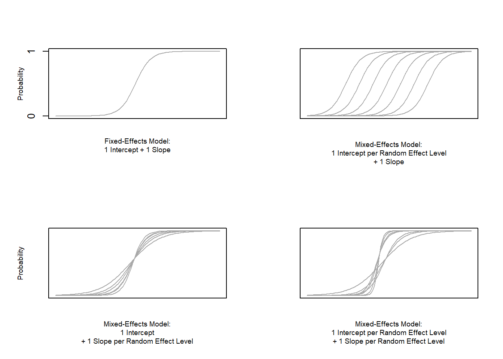
par(mfrow = c(1, 1))The upper left panel merely shows the logistic curve representing the predictions of a fixed-effects logistic regression with a single intercept and slope. The upper right panel shows the logistic curves representing the predictions of a of a mixed-effects logistic regression with random intercepts for each level of a grouping variable. The lower left panel shows the logistic curves representing the predictions of a mixed-effects logistic regression with one intercept but random slopes for each level of a grouping variable. The lower right panel shows the logistic curves representing the predictions of a mixed-effects logistic regression with random intercepts and random slopes for each level of a grouping variable.
After adding random intercepts, predictors (or fixed effects) are added to the model (just like with multiple regression). So mixed-effects are called mixed-effects because they contain both random and fixed effects.
In terms of general procedure, random effects are added first, and only after we have ascertained that including random effects is warranted, we test whether including fixed-effects is warranted (vgl. A. Field, Miles, and Field 2012). We test whether including random effects is warranted by comparing a model, that bases its estimates of the dependent variable solely on the base intercept, with a model, that bases its estimates of the dependent variable solely on the intercepts of the random effect. If the random-effect model explains significantly more variance than the simple model without random effect structure, then we continue with the mixed-effects model. In other words, including random effects is justified if they reduce residual deviance.
4.2 Example: Discourse LIKE in Irish English
In this example we will investigate which factors correlate with the use of final discourse like (e.g. “The weather is shite, like!”) in Irish English. The data set represents speech units in a corpus that were coded for the speaker who uttered a given speech unit, the gender (Gender: Men versus Women) and age of that speaker (Age: Old versus Young), whether the interlocutors were of the same or a different gender (ConversationType: SameGender versus MixedGender), and whether another final discourse like had been used up to three speech units before (Priming: NoPrime versus Prime), whether or not the speech unit contained an final discourse like (SUFLike: 1 = yes, 0 = no. To begin with, we clean the current work space, set option, install and activate relevant packages, load customized functions, and load the example data set.
rm(list=ls(all=T)) # clean current workspace
options("scipen" = 100, "digits" = 4) # set options
library(Hmisc) # activate library
library(RLRsim) # activate library
library(sjPlot) # activate library
library(visreg) # activate library
library(mlogit) # activate library
library(plyr) # activate library
library(rms) # activate library
library(ggplot2) # activate library
library(effects) # activate library
library(lme4) # activate library
library(languageR) # activate library
source("rscripts/multiplot_ggplot2.R") # load multiplot function
source("rscripts/PseudoR2lmerBinomial.R") # load pseudor2 function
source("rscripts/meblr.summary.R") # load summary functionNext, we load the data and inspect the structure of the data set,
# read in existing s´data set mblrdata.txt
mblrdata <- read.table("data/mblrdata.txt", # load data
comment.char = "", # data does not contain comments
quote = "", # data does not contain quotes
sep = "\t", # data is tab separated
header = T) # data has column names
str(mblrdata) # inspect data structure## 'data.frame': 10170 obs. of 6 variables:
## $ ID : chr "S1A-001$A" "S1A-001$A" "S1A-001$A" "S1A-001$A" ...
## $ Gender : chr "Men" "Men" "Men" "Men" ...
## $ Age : chr "Old" "Old" "Old" "Old" ...
## $ ConversationType: chr "SameGender" "SameGender" "SameGender" "SameGender" ...
## $ Priming : chr "Prime" "NoPrime" "NoPrime" "NoPrime" ...
## $ SUFlike : int 1 0 0 0 0 0 0 0 0 0 ...As all variables except for the dependent variable (SUFlike) are character strings, we factorize the independent variables.
vrs <- c("ID", "Age", "Gender", "ConversationType", "Priming") # define variables to be factorized
fctr <- which(colnames(mblrdata) %in% vrs) # define vector with variables
mblrdata[,fctr] <- lapply(mblrdata[,fctr], factor) # factorize variables
mblrdata$Age <- relevel(mblrdata$Age, "Young") # relevel Age (Young = Reference)Before continuing, we check if speakers need to be collapsed because they nest too few data points. As a general rule of thumb, random effects should have a minimum of 20 data points per level.
plot(table(mblrdata$ID)[order(table(mblrdata$ID), decreasing = T)],
ylim = c(0,150),
cex = .5)The plot indicates that the vast majority of speakers represent more than 20 cases. However, we will collapse speakers that represent fewer data points.
collapsespeaker <- table(mblrdata$ID)[which(table(mblrdata$ID) < 21)]
mblrdata$ID <- ifelse(mblrdata$ID %in% collapsespeaker, "Other", mblrdata$ID)After preparing the data, we have a look at the first six lines of the data set.
library(knitr) # load library
kable(head(mblrdata), caption = "First six rows of the data set.")| ID | Gender | Age | ConversationType | Priming | SUFlike |
|---|---|---|---|---|---|
| 1 | Men | Old | SameGender | Prime | 1 |
| 1 | Men | Old | SameGender | NoPrime | 0 |
| 1 | Men | Old | SameGender | NoPrime | 0 |
| 1 | Men | Old | SameGender | NoPrime | 0 |
| 1 | Men | Old | SameGender | NoPrime | 0 |
| 1 | Men | Old | SameGender | NoPrime | 0 |
We now plot the data to inspect the relationships within the data set.
p1 <- ggplot(mblrdata, aes(Gender, SUFlike, color = Gender)) +
scale_fill_brewer() +
stat_summary(fun.y = mean, geom = "point") +
stat_summary(fun.y = mean, geom = "line") +
stat_summary(fun.data = mean_cl_boot, geom = "errorbar", width = 0.2) +
theme_set(theme_bw(base_size = 10)) +
coord_cartesian(ylim = c(0, 1)) +
labs(x = "Sex", y = "Mean frequency of discourse like") +
guides(fill=FALSE, color=FALSE) + # supress legend
scale_color_manual(values = c("blue", "red"))
p2 <- ggplot(mblrdata, aes(Age, SUFlike, color = Age)) +
stat_summary(fun.y = mean, geom = "point") +
stat_summary(fun.y = mean, geom = "line") +
stat_summary(fun.data = mean_cl_boot, geom = "errorbar", width = 0.2) +
coord_cartesian(ylim = c(0, 1)) +
theme_set(theme_bw(base_size = 10)) +
labs(x = "Age", y = "Mean frequency of discourse like") +
guides(fill=FALSE, color=FALSE) + # supress legend
scale_color_manual(values = c("darkblue", "lightblue"))
p3 <- ggplot(mblrdata, aes(ConversationType, SUFlike, colour = ConversationType)) +
stat_summary(fun.y = mean, geom = "point") +
stat_summary(fun.y = mean, geom = "line") +
stat_summary(fun.data = mean_cl_boot, geom = "errorbar", width = 0.2) +
coord_cartesian(ylim = c(0, 1)) +
theme_set(theme_bw(base_size = 10)) +
labs(x = "ConversationType", y = "Mean frequency of discourse like", colour = "ConversationType") +
guides(fill=FALSE, color=FALSE) + # supress legend
scale_color_manual(values = c("darkgreen", "lightgreen"))
p4 <- ggplot(mblrdata, aes(Priming, SUFlike, colour = Priming)) +
stat_summary(fun.y = mean, geom = "point") +
stat_summary(fun.y = mean, geom = "line") +
stat_summary(fun.data = mean_cl_boot, geom = "errorbar", width = 0.2) +
coord_cartesian(ylim = c(0, 1)) +
theme_set(theme_bw(base_size = 10)) +
labs(x = "Priming", y = "Mean frequency of discourse like", colour = "Priming") +
guides(fill=FALSE, color=FALSE) + # supress legend
scale_color_manual(values = c("grey30", "grey60"))
p5 <- ggplot(mblrdata, aes(Age, SUFlike, colour = Gender)) +
stat_summary(fun.y = mean, geom = "point") +
stat_summary(fun.y = mean, geom = "point", aes(group= Gender)) +
stat_summary(fun.data = mean_cl_boot, geom = "errorbar", width = 0.2) +
coord_cartesian(ylim = c(0, 1)) +
theme_set(theme_bw(base_size = 10)) +
scale_color_manual(values = c("blue", "red")) +
labs(x = "Age", y = "Mean frequency of discourse like", colour = "Gender")
p6 <- ggplot(mblrdata, aes(Gender, SUFlike, colour = ConversationType)) +
stat_summary(fun.y = mean, geom = "point") +
stat_summary(fun.y = mean, geom = "point", aes(group= ConversationType)) +
stat_summary(fun.data = mean_cl_boot, geom = "errorbar", width = 0.2) +
coord_cartesian(ylim = c(0, 1)) +
theme_set(theme_bw(base_size = 10)) +
labs(x = "Sex", y = "Mean frequency of discourse like", colour = "Age") +
scale_color_manual(values = c("darkgreen", "lightgreen"))
# display the plots
multiplot(p1, p3, p5, p2, p4, p6, cols = 2)The upper left panel in the Figure above indicates that men sue discourse like more frequently than women. The centre right panel suggests that priming significantly increases the likelihood of discourse like being used. The centre left panel suggests that speakers use discourse like more frequently in mixed-gender conversations. However, the lower right panel indicates an interaction between gender and conversation type as women appear to use discourse like less frequently in same gender conversations while the conversation type does not seem to have an effect on men. After visualizing the data, we will now turn to the model building process.
4.3 Model Building
In a first step, we set the options and generate a distance matrix of the data.
# set options
options(contrasts =c("contr.treatment", "contr.poly"))
mblrdata.dist <- datadist(mblrdata)
options(datadist = "mblrdata.dist")In a next step, we generate fixed-effects minimal base-line models and a base-line mixed-model using the glmer function with a random intercept for ID (a lmer object of the final minimal adequate model will be created later).
m0.glm = glm(SUFlike ~ 1, family = binomial, data = mblrdata) # baseline model glm
m0.lrm = lrm(SUFlike ~ 1, data = mblrdata, x = T, y = T) # baseline model lrm
m0.glmer = glmer(SUFlike ~ (1|ID), data = mblrdata, family = binomial) # base-line mixed-model4.4 Testing the Random Effect
Now, we check if including the random effect is permitted by comparing the AICs from the glm to AIC from the glmer model. If the AIC of the glmer object is smaller than the AIC of the glm object, then this indicates that including random intercepts is justified.
aic.glmer <- AIC(logLik(m0.glmer))
aic.glm <- AIC(logLik(m0.glm))
aic.glmer; aic.glm## [1] 9193## [1] 9310The AIC of the glmer object is smaller which shows that including the random intercepts is justified. To confirm whether the AIC reduction is sufficient for justifying the inclusion of a random-effect structure, we also test whether the mixed-effects minimal base-line model explains significantly more variance by applying a Model Likelihood Ratio Test to the fixed- and the mixed effects minimal base-line models.
# test random effects
null.id = -2 * logLik(m0.glm) + 2 * logLik(m0.glmer)
pchisq(as.numeric(null.id), df=1, lower.tail=F) # sig m0.glmer better than m0.glm## [1] 0.000000000000000000000000001273The p-value of the Model Likelihood Ratio Test is lower than .05 which shows that the inclusion of the random-effects structure is warranted. We can now continue with the model fitting process.
4.5 Model Fitting
The next step is to fit the model which means that we aim to find the “best” model, i.e. the minimal adequate model. In this case, we will use a manual step-wise step-up, forward elimination procedure. Before we begin with the model fitting process we need to add ´control = glmerControl(optimizer = “bobyqa”)´ to avoid unneccesary failures to converge.
m0.glmer <- glmer(SUFlike ~ 1+ (1|ID), family = binomial, data = mblrdata, control=glmerControl(optimizer="bobyqa"))During each step of the fitting procedure, we test whether certain assumptions on which the model relies are violated. To avoid incomplete information (a combination of variables does not occur in the data), we tabulate the variables we intend to include and make sure that all possible combinations are present in the data. Including variables although not all combinations are present in the data would lead to unreliable models that report (vastly) inaccurate results. A special case of incomplete information is complete separation which occurs if one predictor perfectly explains an outcome (in that case the incomplete information would be caused by a level of the dependent variable). In addition, we make sure that the VIFs do not exceed a maximum of 3 as higher values would indicate multicollinearity and thus that the model is unstable. Only once we have confirmed that the incomplete information, complete separation, and multicollinearity are not a major concern, we generate the more saturated model and test whether the inclusion of a predictor leads to a significant reduction in residual deviance. If the predictor explains a significant amount of variance, it is retained in the model while being disregarded in case it does not explain a sufficient quantity of variance.
# add Priming
ifelse(min(ftable(mblrdata$Priming, mblrdata$SUFlike)) == 0, "incomplete information", "okay")## [1] "okay"m1.glm <- update(m0.glm, .~.+Priming)
m1.glmer <- update(m0.glmer, .~.+Priming)
anova(m1.glmer, m0.glmer, test = "Chi") # SIG (p<.001***) ## Data: mblrdata
## Models:
## m0.glmer: SUFlike ~ 1 + (1 | ID)
## m1.glmer: SUFlike ~ (1 | ID) + Priming
## Df AIC BIC logLik deviance Chisq Chi Df Pr(>Chisq)
## m0.glmer 2 9193 9208 -4595 9189
## m1.glmer 3 8688 8710 -4341 8682 507 1 <0.0000000000000002 ***
## ---
## Signif. codes: 0 '***' 0.001 '**' 0.01 '*' 0.05 '.' 0.1 ' ' 1# add Age
ifelse(min(ftable(mblrdata$Age, mblrdata$SUFlike)) == 0, "incomplete information", "okay")## [1] "okay"m2.glm <- update(m1.glm, .~.+Age)
ifelse(max(vif(m2.glm)) <= 3, "VIFs okay", "VIFs unacceptable") # VIFs ok## [1] "VIFs okay"m2.glmer <- update(m1.glmer, .~.+Age)
anova(m2.glmer, m1.glmer, test = "Chi") #mar sig (p=.0.61) BUT BIC inflation ## Data: mblrdata
## Models:
## m1.glmer: SUFlike ~ (1 | ID) + Priming
## m2.glmer: SUFlike ~ (1 | ID) + Priming + Age
## Df AIC BIC logLik deviance Chisq Chi Df Pr(>Chisq)
## m1.glmer 3 8688 8710 -4341 8682
## m2.glmer 4 8687 8716 -4339 8679 3.44 1 0.064 .
## ---
## Signif. codes: 0 '***' 0.001 '**' 0.01 '*' 0.05 '.' 0.1 ' ' 1# add Gender
ifelse(min(ftable(mblrdata$Gender, mblrdata$SUFlike)) == 0, "incomplete information", "okay")## [1] "okay"m3.glm <- update(m1.glm, .~.+Gender)
ifelse(max(vif(m3.glm)) <= 3, "VIFs okay", "VIFs unacceptable") # VIFs ok## [1] "VIFs okay"m3.glmer <- update(m1.glmer, .~.+Gender)
anova(m3.glmer, m1.glmer, test = "Chi") # SIG (p<.001***) ## Data: mblrdata
## Models:
## m1.glmer: SUFlike ~ (1 | ID) + Priming
## m3.glmer: SUFlike ~ (1 | ID) + Priming + Gender
## Df AIC BIC logLik deviance Chisq Chi Df Pr(>Chisq)
## m1.glmer 3 8688 8710 -4341 8682
## m3.glmer 4 8597 8626 -4294 8589 93.6 1 <0.0000000000000002 ***
## ---
## Signif. codes: 0 '***' 0.001 '**' 0.01 '*' 0.05 '.' 0.1 ' ' 1# add ConversationType
ifelse(min(ftable(mblrdata$ConversationType, mblrdata$SUFlike)) == 0, "incomplete information", "okay")## [1] "okay"m4.glm <- update(m3.glm, .~.+ConversationType)
ifelse(max(vif(m4.glm)) <= 3, "VIFs okay", "VIFs unacceptable") # VIFs ok## [1] "VIFs okay"m4.glmer <- update(m3.glmer, .~.+ConversationType)
anova(m4.glmer, m3.glmer, test = "Chi") # SIG (p<.001***) ## Data: mblrdata
## Models:
## m3.glmer: SUFlike ~ (1 | ID) + Priming + Gender
## m4.glmer: SUFlike ~ (1 | ID) + Priming + Gender + ConversationType
## Df AIC BIC logLik deviance Chisq Chi Df Pr(>Chisq)
## m3.glmer 4 8597 8626 -4294 8589
## m4.glmer 5 8560 8596 -4275 8550 39.2 1 0.00000000038 ***
## ---
## Signif. codes: 0 '***' 0.001 '**' 0.01 '*' 0.05 '.' 0.1 ' ' 1# add Priming*Age
ifelse(min(ftable(mblrdata$Priming, mblrdata$Age, mblrdata$SUFlike)) == 0, "incomplete information", "okay")## [1] "okay"m5.glm <- update(m4.glm, .~.+Priming*Age)
ifelse(max(vif(m5.glm)) <= 3, "VIFs okay", "VIFs unacceptable") # VIFs ok## [1] "VIFs okay"m5.glmer <- update(m4.glmer, .~.+Priming*Age)
anova(m5.glmer, m4.glmer, test = "Chi") # not sig (p=0.6) ## Data: mblrdata
## Models:
## m4.glmer: SUFlike ~ (1 | ID) + Priming + Gender + ConversationType
## m5.glmer: SUFlike ~ (1 | ID) + Priming + Gender + ConversationType + Age +
## m5.glmer: Priming:Age
## Df AIC BIC logLik deviance Chisq Chi Df Pr(>Chisq)
## m4.glmer 5 8560 8596 -4275 8550
## m5.glmer 7 8563 8613 -4274 8549 1.03 2 0.6# add Priming*Gender
ifelse(min(ftable(mblrdata$Priming, mblrdata$Gender, mblrdata$SUFlike)) == 0, "incomplete information", "okay")## [1] "okay"m6.glm <- update(m4.glm, .~.+Priming*Gender)
ifelse(max(vif(m6.glm)) <= 3, "VIFs okay", "VIFs unacceptable") # VIFs unacceptable## [1] "VIFs unacceptable"Because the VIFs exceed values of 3 the degree of multicollinearity is unacceptable so that we abort and move on the next model.
# add Priming*ConversationType
ifelse(min(ftable(mblrdata$Priming, mblrdata$ConversationType, mblrdata$SUFlike)) == 0, "incomplete information", "okay")## [1] "okay"m7.glm <- update(m4.glm, .~.+Priming*ConversationType)
ifelse(max(vif(m7.glm)) <= 3, "VIFs okay", "VIFs unacceptable") # VIFs unacceptable## [1] "VIFs unacceptable"Because the VIFs exceed values of 3 the degree of multicollinearity is unacceptable so that we abort and move on the next model.
# add Age*Gender
ifelse(min(ftable(mblrdata$Age, mblrdata$Gender, mblrdata$SUFlike)) == 0, "incomplete information", "okay")## [1] "okay"m8.glm <- update(m4.glm, .~.+Age*Gender)
ifelse(max(vif(m8.glm)) <= 3, "VIFs okay", "VIFs unacceptable") # VIFs unacceptable## [1] "VIFs unacceptable"Because the VIFs exceed values of 3 the degree of multicollinearity is unacceptable so that we abort and move on the next model.
# add Age*ConversationType
ifelse(min(ftable(mblrdata$Age, mblrdata$ConversationType, mblrdata$SUFlike)) == 0, "incomplete information", "okay")## [1] "okay"m9.glm <- update(m4.glm, .~.+Age*ConversationType)
ifelse(max(vif(m9.glm)) <= 3, "VIFs okay", "VIFs unacceptable") # VIFs ok## [1] "VIFs okay"m9.glmer <- update(m4.glmer, .~.+Age*ConversationType)
anova(m9.glmer, m4.glmer, test = "Chi") # not sig (p=0.3) ## Data: mblrdata
## Models:
## m4.glmer: SUFlike ~ (1 | ID) + Priming + Gender + ConversationType
## m9.glmer: SUFlike ~ (1 | ID) + Priming + Gender + ConversationType + Age +
## m9.glmer: ConversationType:Age
## Df AIC BIC logLik deviance Chisq Chi Df Pr(>Chisq)
## m4.glmer 5 8560 8596 -4275 8550
## m9.glmer 7 8561 8612 -4274 8547 2.4 2 0.3Because the VIFs exceed values of 3 the degree of multicollinearity is unacceptable so that we abort and move on the next model.
# add Gender*ConversationType
ifelse(min(ftable(mblrdata$Gender, mblrdata$ConversationType, mblrdata$SUFlike)) == 0, "incomplete information", "okay")## [1] "okay"m10.glm <- update(m4.glm, .~.+Gender*ConversationType)
ifelse(max(vif(m10.glm)) <= 3, "VIFs okay", "VIFs unacceptable") # VIFs unacceptable## [1] "VIFs unacceptable"Because the VIFs exceed values of 3 the degree of multicollinearity is unacceptable so that we abort and move on the next model.
# add Priming*Age*Gender
ifelse(min(ftable(mblrdata$Priming,mblrdata$Age, mblrdata$Gender, mblrdata$SUFlike)) == 0, "incomplete information", "okay")## [1] "okay"m11.glm <- update(m4.glm, .~.+Priming*Age*Gender)
ifelse(max(vif(m11.glm)) <= 3, "VIFs okay", "VIFs unacceptable") # VIFs unacceptable## [1] "VIFs unacceptable"Because the VIFs exceed values of 3 the degree of multicollinearity is unacceptable so that we abort and move on the next model.
# add Priming*Age*ConversationType
ifelse(min(ftable(mblrdata$Priming,mblrdata$Age, mblrdata$ConversationType, mblrdata$SUFlike)) == 0, "incomplete information", "okay")## [1] "okay"m12.glm <- update(m4.glm, .~.+Priming*Age*ConversationType)
ifelse(max(vif(m12.glm)) <= 3, "VIFs okay", "VIFs unacceptable") # VIFs unacceptable## [1] "VIFs unacceptable"Because the VIFs exceed values of 3 the degree of multicollinearity is unacceptable so that we abort and move on the next model.
# add Priming*Gender*ConversationType
ifelse(min(ftable(mblrdata$Priming,mblrdata$Gender, mblrdata$ConversationType, mblrdata$SUFlike)) == 0, "incomplete information", "okay")## [1] "okay"m13.glm <- update(m4.glm, .~.+Priming*Gender*ConversationType)
ifelse(max(vif(m13.glm)) <= 3, "VIFs okay", "VIFs unacceptable") # VIFs unacceptable## [1] "VIFs unacceptable"Because the VIFs exceed values of 3 the degree of multicollinearity is unacceptable so that we abort and move on the next model.
# add Age*Gender*ConversationType
ifelse(min(ftable(mblrdata$Age,mblrdata$Gender, mblrdata$ConversationType, mblrdata$SUFlike)) == 0, "incomplete information", "okay")## [1] "okay"m14.glm <- update(m4.glm, .~.+Age*Gender*ConversationType)
ifelse(max(vif(m14.glm)) <= 3, "VIFs okay", "VIFs unacceptable") # VIFs unacceptable## [1] "VIFs unacceptable"Because the VIFs exceed values of 3 the degree of multicollinearity is unacceptable so that we abort and move on the next model.
# add Priming*Age*Gender*ConversationType
ifelse(min(ftable(mblrdata$Priming,mblrdata$Age,mblrdata$Gender, mblrdata$ConversationType, mblrdata$SUFlike)) == 0, "incomplete information", "okay")## [1] "okay"m15.glm <- update(m4.glm, .~.+Priming*Age*Gender*ConversationType)
ifelse(max(vif(m15.glm)) <= 3, "VIFs okay", "VIFs unacceptable") # VIFs unacceptable## [1] "VIFs unacceptable"In a next step, we test which models are the most adequate by comparing all models to get an overview of model parameters. This way it is possible to check which model has the lowest AIC, BIC, and the highest \(\chi\)2 value
# comparisons of glmer objects
m1.m0 <- anova(m1.glmer, m0.glmer, test = "Chi")
m2.m1 <- anova(m2.glmer, m1.glmer, test = "Chi")
m3.m1 <- anova(m3.glmer, m1.glmer, test = "Chi")
m4.m3 <- anova(m4.glmer, m3.glmer, test = "Chi")
m5.m4 <- anova(m5.glmer, m4.glmer, test = "Chi")
m9.m4 <- anova(m9.glmer, m4.glmer, test = "Chi")
# create a list of the model comparisons
mdlcmp <- list(m1.m0, m2.m1, m3.m1, m4.m3, m5.m4, m9.m4)
# load function for summary
source("rscripts/ModelFittingSummarySWSU.R") # for GLMEM (step-wise step-up)
mdlft <- mdl.fttng.swsu(mdlcmp)
mdlft <- mdlft[,-2]
library(knitr) # load library
kable(mdlft, caption = "Model fitting process summary.")| Model | Term Added | Compared to… | DF | AIC | BIC | LogLikelihood | Residual Deviance | X2 | X2DF | p-value | Significance |
|---|---|---|---|---|---|---|---|---|---|---|---|
| m1.glmer | 1+Priming | m0.glmer | 3 | 8688.39 | 8710.07 | -4341.19 | 8682.39 | 506.84 | 1 | 0 | p < .001*** |
| m2.glmer | Age | m1.glmer | 4 | 8686.95 | 8715.86 | -4339.47 | 8678.95 | 3.44 | 1 | 0.06373 | p < .10(*) |
| m3.glmer | Gender | m1.glmer | 4 | 8596.76 | 8625.67 | -4294.38 | 8588.76 | 93.63 | 1 | 0 | p < .001*** |
| m4.glmer | ConversationType | m3.glmer | 5 | 8559.57 | 8595.7 | -4274.78 | 8549.57 | 39.19 | 1 | 0 | p < .001*** |
| m5.glmer | Age+Priming:Age | m4.glmer | 7 | 8562.54 | 8613.13 | -4274.27 | 8548.54 | 1.03 | 2 | 0.59875 | n.s. |
| m9.glmer | Age+ConversationType:Age | m4.glmer | 7 | 8561.17 | 8611.76 | -4273.58 | 8547.17 | 2.4 | 2 | 0.30176 | n.s. |
We now rename our final minimal adequate model, test whether it performs significantly better than the minimal base-line model, and print the regression summary.
mlr.glmer <- m4.glmer # rename final minimal adequate model
mlr.glm <- m4.glm # rename final minimal adequate fixed-effects model
anova(mlr.glmer, m0.glmer, test = "Chi") # final model better than base-line model## Data: mblrdata
## Models:
## m0.glmer: SUFlike ~ 1 + (1 | ID)
## mlr.glmer: SUFlike ~ (1 | ID) + Priming + Gender + ConversationType
## Df AIC BIC logLik deviance Chisq Chi Df Pr(>Chisq)
## m0.glmer 2 9193 9208 -4595 9189
## mlr.glmer 5 8560 8596 -4275 8550 640 3 <0.0000000000000002
##
## m0.glmer
## mlr.glmer ***
## ---
## Signif. codes: 0 '***' 0.001 '**' 0.01 '*' 0.05 '.' 0.1 ' ' 1print(mlr.glmer, corr = F) # inspect final minimal adequate model## Generalized linear mixed model fit by maximum likelihood (Laplace
## Approximation) [glmerMod]
## Family: binomial ( logit )
## Formula: SUFlike ~ (1 | ID) + Priming + Gender + ConversationType
## Data: mblrdata
## AIC BIC logLik deviance df.resid
## 8560 8596 -4275 8550 10165
## Random effects:
## Groups Name Std.Dev.
## ID (Intercept) 0.126
## Number of obs: 10170, groups: ID, 225
## Fixed Effects:
## (Intercept) PrimingPrime
## -0.954 1.700
## GenderWomen ConversationTypeSameGender
## -0.761 -0.435anova(mlr.glmer) # ANOVA summary## Analysis of Variance Table
## Df Sum Sq Mean Sq F value
## Priming 1 481 481 480.6
## Gender 1 195 195 195.1
## ConversationType 1 44 44 44.2To extract the effect sizes of the significant fixed effects, we compare the model with that effect to a model without that effect so that we can ascertain how much variance that effect explains.
anova(m1.glmer, m0.glmer, test = "Chi") # Priming effect## Data: mblrdata
## Models:
## m0.glmer: SUFlike ~ 1 + (1 | ID)
## m1.glmer: SUFlike ~ (1 | ID) + Priming
## Df AIC BIC logLik deviance Chisq Chi Df Pr(>Chisq)
## m0.glmer 2 9193 9208 -4595 9189
## m1.glmer 3 8688 8710 -4341 8682 507 1 <0.0000000000000002 ***
## ---
## Signif. codes: 0 '***' 0.001 '**' 0.01 '*' 0.05 '.' 0.1 ' ' 1anova(m3.glmer, m1.glmer, test = "Chi") # Gender effect## Data: mblrdata
## Models:
## m1.glmer: SUFlike ~ (1 | ID) + Priming
## m3.glmer: SUFlike ~ (1 | ID) + Priming + Gender
## Df AIC BIC logLik deviance Chisq Chi Df Pr(>Chisq)
## m1.glmer 3 8688 8710 -4341 8682
## m3.glmer 4 8597 8626 -4294 8589 93.6 1 <0.0000000000000002 ***
## ---
## Signif. codes: 0 '***' 0.001 '**' 0.01 '*' 0.05 '.' 0.1 ' ' 1anova(m4.glmer, m3.glmer, test = "Chi") # ConversationType effect## Data: mblrdata
## Models:
## m3.glmer: SUFlike ~ (1 | ID) + Priming + Gender
## m4.glmer: SUFlike ~ (1 | ID) + Priming + Gender + ConversationType
## Df AIC BIC logLik deviance Chisq Chi Df Pr(>Chisq)
## m3.glmer 4 8597 8626 -4294 8589
## m4.glmer 5 8560 8596 -4275 8550 39.2 1 0.00000000038 ***
## ---
## Signif. codes: 0 '***' 0.001 '**' 0.01 '*' 0.05 '.' 0.1 ' ' 14.6 Extracting Model Fit Parameters
We now create an lrm and lmer object that are equivalent to the final minimal adequate model (but the former without the random effect).
mlr.lrm <- lrm(SUFlike ~ Priming + Gender + ConversationType, data = mblrdata, x = T, y = T)
m1.glm = glm(SUFlike ~ Priming + Gender + ConversationType, family = binomial, data = mblrdata) # baseline model glm
# we now create a lmer object equivalent to the final minimal adequate model
mlr.lmer <- lmer(SUFlike ~ Age + Gender + ConversationType + (1|ID), data = mblrdata, family = binomial)We now check on the lmer object if the fixed effects of the lrm and of the lmer model correlate (cf Baayen 2008:281).
cor.test(coef(mlr.lrm), fixef(mlr.lmer))##
## Pearson's product-moment correlation
##
## data: coef(mlr.lrm) and fixef(mlr.lmer)
## t = 2.7, df = 2, p-value = 0.1
## alternative hypothesis: true correlation is not equal to 0
## 95 percent confidence interval:
## -0.5169 0.9975
## sample estimates:
## cor
## 0.8827The fixed effects correlate strongly (.8827) which is a good indicator as it suggests that the coefficient estimates are sufficiently stable. We now activate the Hmisc package (if not already active) to extract model fit parameters (cf. Baayen 2008:281).
library(Hmisc) # activate Hmisc library
probs = 1/(1+exp(-fitted(mlr.lmer)))
probs = binomial()$linkinv(fitted(mlr.lmer))
somers2(probs, as.numeric(mblrdata$SUFlike))## C Dxy n Missing
## 0.6323 0.2646 10170.0000 0.0000The model fit parameters indicate a sufficient but not very good fit. The C-value indicates a goodness of fit between predicted and observed responses (occurrences of SUFlike). If the C-value is 0.5, the predictions are random, while the predictions are perfect if the C-value is 1. C-values above 0.8 indicates real predictive capacity (Baayen 2008:204).
Somers’ Dxy is a value that represents a rank correlation between predicted probabilities and observed responses. Somers’ Dxy values range between 0, which indicates complete randomness, and 1, which indicates perfect prediction (Baayen 2008:204). This a value of .2646 suggests that the model performs better than chance but not substantially so. We will now perform the model diagnostics.
4.7 Model Diagnostics
We begin the model diagnostics by generating a diagnostic that plots the fitted or predicted values against the residuals.
plot(mlr.glmer)# plot residuals against fitted
stripParams <- list(cex=.3, lines=1.5)
plot(mlr.glmer, form = resid(., type = "response") ~ fitted(.) | ID, abline = 0, par.strip.text = stripParams,cex = .3,id = 0.05, adj = -0.3)# diagnostic plot: examining residuals (Pinheiro & Bates 2000:175)
plot(mlr.glmer, ID ~ resid(.), abline = 0 , cex = .5)# summarize final model
mblrmtb <- meblrm.summary(m0.glm, m1.glm, m0.glmer, mlr.glmer, dpvar=mblrdata$SUFlike)
mblrmtb <- mblrmtb[, -c(4:5)]
library(knitr) # load library
kable(mblrmtb, caption = "Results of a Mixed-Effects Binomial Logistic Regression Model.")| Group(s) | Variance | Std. Dev. | L.R. X2 | DF | Pr | Significance | |
|---|---|---|---|---|---|---|---|
| Random Effect(s) | ID | 0.02 | 0.13 | 118.61 | 1 | 0 | p < .001*** |
| Fixed Effect(s) | Estimate | VIF | OddsRatio | Std. Error | z value | Pr(>|z|) | Significance |
| (Intercept) | -0.95 | 0.39 | 0.06 | -14.93 | 0 | p < .001*** | |
| PrimingPrime | 1.7 | 1.01 | 5.47 | 0.07 | 22.85 | 0 | p < .001*** |
| GenderWomen | -0.76 | 1.21 | 0.47 | 0.08 | -9.9 | 0 | p < .001*** |
| ConversationTypeSameGender | -0.43 | 1.22 | 0.65 | 0.07 | -6.65 | 0 | p < .001*** |
| Model statistics | Value | ||||||
| Number of Groups | 225 | ||||||
| Number of cases in model | 10170 | ||||||
| Observed misses | 8430 | ||||||
| Observed successes | 1740 | ||||||
| Residual deviance | 8549.57 | ||||||
| R2 (Nagelkerke) | 0.126 | ||||||
| R2 (Hosmer & Lemeshow) | 0.086 | ||||||
| R2 (Cox & Snell) | 0.075 | ||||||
| C | 0.708 | ||||||
| Somers’ Dxy | 0.416 | ||||||
| AIC | 8559.57 | ||||||
| BIC | 8595.7 | ||||||
| Prediction accuracy | 82.69% | ||||||
| Model Likelihood Ratio Test | L.R. X2: 758.28 | DF: 4 | p-value: 0 | sig: p < .001*** |
5 Conditional Inference Trees
We now turn to tree-structure models, the most basic of which we will be dealing with here are conditional inference trees. Like random forests, conditional inference trees are non-parametric and thus do not rely on distributional requirements. In addition, tree-structure models are very useful because they can deal with different types of variables. Tree-structure models are particularly interesting for linguists because they can handle moderate sample sizes and many high-order interactions better then regression models. The tree structure represents recursive partitioning of the data to minimize residual deviance.
Before we implement a conditional inference tree in R, we will have a look at how it works. We will do this in more detail here as random forests and Boruta anlyses are extensions of conditional inference trees and are therefore based on the same concepts.
Below is a conditional inference tree of the iris-data set. All conditional inference trees answer a simple question, namely “How do we classify elements based on the given predictors?”. The answer that conditional inference trees provide is the classification of the elements based on the levels of the predictors. If predictors are not significant or all elements can be classified correctly without them (i.e. if these predictors are unneccessary), then they are not included in the decision tree. The conditional inference tree shows that we only need one predictor to classify all flowers as either being an example of the species “setosa” or another species. If the petal of a flower in the data set is shorter than 1.9, then the flower is a setosa, while it is not if the petal length is greater than 1.9.
The top of the decision tree is called “root” or “root node”, the categories at the end of branches are called “leaves” or “leaf nodes”. Nodes that are in-between the root and leaves are called “internal nodes” or just “nodes”. The root node has only arrows or lines pointing away from it, internal nodes have lines going to and from them, while leaf nodes only have lines pointing towards them.
Let us imagine, we are dealing with a very small data set that consits of only four cases and four variables. In our example, we want to predict whether a person makes use of discourse like given their age, gender, and social status. The first six lines of this ficticious data set are displayed in the table below:
| Gender | Age | SocialStatus | LikeUser |
|---|---|---|---|
| Woman | Old | High | 1 |
| Man | Young | Low | 1 |
| Man | Old | Low | 0 |
| Woman | Young | High | 1 |
| Man | Young | Low | 1 |
| Man | Old | Low | 0 |
In a first step, it need to be determined, what the root of the decision tree should be. In order to do so, we tabulate for each variable level, how many speakers of that level have used discourse like (LikeUsers) and how many have not used discourse like (NonLikeUsers).
##
## Man Woman
## 0 125 39
## 1 34 105##
## Old Young
## 0 127 33
## 1 37 100##
## High Low
## 0 31 129
## 1 92 45None of the predictors is perfect (the perdictors are therefore refered to as “impure”). To determine which variable is the root, we will caluculate the degree of “impurity” for each variable - the variable which has the lowest impurity value will be the root.
The most common measure of impurity in the conext of conditional inference trees is called “Gini”. For each level we apply the following equation to determine the impuruty value:
\begin{equation}
G_{x} = 1 - ( p_{1} )2 - ( p_{0} )2
\begin{equation}
For the node for men, this would mean the following:
\begin{equation}
G_{men} = 1-()2 - ()2 = .3362209
\begin{equation}
For women, we caculate G or Gini as follows:
\begin{equation}
G_{women} = 1-()2 - ()2 = .3949653
\begin{equation}
To calculate the Gini value of Gender, we need to calculate the weighted avergage leaf node impurity (weighted because the number of speakers is different in each group). We calculate the weighted avergage leaf node impurity using the forluar below.
\begin{equation}
G_{Gender} = G_{men} + G_{women}
G_{Gender} = .336 + .395 = .364139
\begin{equation}
We now need to calculate the Gini values for all predictors in our data set.
#install.packages(Rling) # install Rling library (remove # to activate)
library(Rling) # activate Rling library
options(stringsAsFactors = F) # set options: do not convert strings
options(scipen = 999) # set options: supress math. notation
options(max.prAmplified=10000) # set optionsreallyaus <- read.table("data/ampaus05_statz.txt", # load data
sep = "\t", # data is tab separated
header = T) # data has headers
str(reallyaus) # inspect data## 'data.frame': 314 obs. of 15 variables:
## $ Age : chr "26-40" "26-40" "26-40" "17-25" ...
## $ Adjective : chr "good" "good" "good" "nice" ...
## $ FileSpeaker : chr "<S1A-001:1$B>" "<S1A-001:1$B>" "<S1A-001:1$B>" "<S1A-003:1$B>" ...
## $ Function : chr "Attributive" "Attributive" "Predicative" "Attributive" ...
## $ Priming : chr "NoPrime" "NoPrime" "NoPrime" "NoPrime" ...
## $ Gender : chr "Men" "Men" "Men" "Men" ...
## $ Occupation : chr "AcademicManagerialProfessionals" "AcademicManagerialProfessionals" "AcademicManagerialProfessionals" "AcademicManagerialProfessionals" ...
## $ ConversationType: chr "SameSex" "SameSex" "SameSex" "SameSex" ...
## $ AudienceSize : chr "MultipleInterlocutors" "MultipleInterlocutors" "MultipleInterlocutors" "Dyad" ...
## $ very : int 0 0 0 1 0 1 0 1 0 0 ...
## $ really : int 0 0 0 0 0 0 0 0 1 1 ...
## $ Freq : num 27.848 27.848 27.848 7.293 0.617 ...
## $ Gradabilty : chr "NotGradable" "NotGradable" "NotGradable" "NotGradable" ...
## $ SemanticCategory: chr "Value" "Value" "Value" "HumanPropensity" ...
## $ Emotionality : chr "PositiveEmotional" "PositiveEmotional" "PositiveEmotional" "NonEmotional" ...# remove superfluous columns
reallyaus$FileSpeaker <- NULL
reallyaus$Occupation <- NULL
reallyaus$very <- NULL
# define vector for data inspection
clfct <- c("Age", "Adjective", "Function", "Priming", "Gender", "ConversationType",
"AudienceSize", "really", "Gradabilty", "SemanticCategory", "Emotionality")
# factorize data
reallyaus[clfct] <- lapply(reallyaus[clfct], factor)
# inspect data
str(reallyaus)## 'data.frame': 314 obs. of 12 variables:
## $ Age : Factor w/ 3 levels "17-25","26-40",..: 2 2 2 1 3 3 3 3 1 1 ...
## $ Adjective : Factor w/ 6 levels "bad","funny",..: 3 3 3 5 6 6 3 6 6 6 ...
## $ Function : Factor w/ 2 levels "Attributive",..: 1 1 2 1 2 2 1 2 1 1 ...
## $ Priming : Factor w/ 2 levels "NoPrime","Prime": 1 1 1 1 1 1 1 1 1 2 ...
## $ Gender : Factor w/ 2 levels "Men","Women": 1 1 1 1 1 1 2 2 1 1 ...
## $ ConversationType: Factor w/ 2 levels "MixedSex","SameSex": 2 2 2 2 2 1 1 1 1 1 ...
## $ AudienceSize : Factor w/ 2 levels "Dyad","MultipleInterlocutors": 2 2 2 1 1 2 2 2 2 2 ...
## $ really : Factor w/ 2 levels "0","1": 1 1 1 1 1 1 1 1 2 2 ...
## $ Freq : num 27.848 27.848 27.848 7.293 0.617 ...
## $ Gradabilty : Factor w/ 3 levels "GradabilityUndetermined",..: 3 3 3 3 3 3 3 1 1 3 ...
## $ SemanticCategory: Factor w/ 5 levels "Dimension","HumanPropensity",..: 5 5 5 2 5 5 5 2 1 4 ...
## $ Emotionality : Factor w/ 3 levels "NegativeEmotional",..: 3 3 3 2 2 3 3 1 2 2 ...library(partykit)
# create data
citd <- reallyaus
# set.seed
set.seed(111)
# apply bonferroni correction (1 minus alpha multiplied by n of predictors)
control = ctree_control(mincriterion = 1-(.05*14))
# create initial conditional inference tree model
citd.ctree <- ctree(really ~ Age + Adjective + Function + Priming + Gender +
ConversationType + AudienceSize + Freq +
Gradabilty + SemanticCategory + Emotionality,
data = citd)
# plot final ctree
plot(citd.ctree, gp = gpar(fontsize = 8))# test prediction accuracy
ptb <- table(predict(citd.ctree), citd$really)
(((ptb[1]+ptb[4])+(ptb[2]+ptb[3]))/sum(table(predict(citd.ctree), citd$really)))*100## [1] 100##100
# determine baseline
(table(citd$really)[[2]]/sum(table(citd$really)))*100## [1] 41.08## 41.086 Random Forests
Random Forests are an extension of Conditional Inference Trees. Like Conditional Inference Trees, Random Forests represent a non-parametric partitioning method that is particularly useful when dealing with relatively small sample sizes and many predictors (including interactions).
6.1 Example 1:
rfd <- reallyaus # prepare data
rfd$really <- as.factor(rfd$really) # convert really into a factor
set.seed(222) # set seedAfter the data preparation, we can now start with the random forest analysis.
# partition data for evaluating rf
id <- sample(2, nrow(rfd), replace = T, prob = c(.7, .3))
train <- rfd[id == 1, ]
test <- rfd[id == 2,]# load library
library(randomForest)
# create initial model
reallyaus_rf1 <- randomForest(really~., data = train)
# inspect model
print(reallyaus_rf1)##
## Call:
## randomForest(formula = really ~ ., data = train)
## Type of random forest: classification
## Number of trees: 500
## No. of variables tried at each split: 3
##
## OOB estimate of error rate: 41.47%
## Confusion matrix:
## 0 1 class.error
## 0 79 44 0.3577
## 1 46 48 0.4894# inspect attibutes
attributes(reallyaus_rf1)## $names
## [1] "call" "type" "predicted"
## [4] "err.rate" "confusion" "votes"
## [7] "oob.times" "classes" "importance"
## [10] "importanceSD" "localImportance" "proximity"
## [13] "ntree" "mtry" "forest"
## [16] "y" "test" "inbag"
## [19] "terms"
##
## $class
## [1] "randomForest.formula" "randomForest"# start model evaluation
# install package
#source("https://bioconductor.org/biocLite.R"); biocLite(); library(Biobase)
#install.packages("Biobase", repos=c("http://rstudio.org/_packages", "http://cran.rstudio.com",
# "http://cran.rstudio.com/", dependencies=TRUE))
#install.packages("dimRed", dependencies = TRUE)
#install.packages('caret', dependencies = TRUE)# load caret library
library(caret) # because initially caret did not work, the libraries above had to be installed
ptrain1 <- predict(reallyaus_rf1, train) # extract prediction for training data
head(ptrain1); head(train$really) # inspect predictions## 2 3 4 7 8 9
## 0 0 0 0 0 1
## Levels: 0 1## [1] 0 0 0 0 0 1
## Levels: 0 1confusionMatrix(ptrain1, train$really) # generate confusion matrix## Confusion Matrix and Statistics
##
## Reference
## Prediction 0 1
## 0 116 13
## 1 7 81
##
## Accuracy : 0.908
## 95% CI : (0.861, 0.943)
## No Information Rate : 0.567
## P-Value [Acc > NIR] : <0.0000000000000002
##
## Kappa : 0.811
## Mcnemar's Test P-Value : 0.264
##
## Sensitivity : 0.943
## Specificity : 0.862
## Pos Pred Value : 0.899
## Neg Pred Value : 0.920
## Prevalence : 0.567
## Detection Rate : 0.535
## Detection Prevalence : 0.594
## Balanced Accuracy : 0.902
##
## 'Positive' Class : 0
## # extract prediction for test data
ptest1 <- predict(reallyaus_rf1, test)
# create confusionMatrix
confusionMatrix(ptest1, test$really)## Confusion Matrix and Statistics
##
## Reference
## Prediction 0 1
## 0 44 16
## 1 18 19
##
## Accuracy : 0.649
## 95% CI : (0.546, 0.744)
## No Information Rate : 0.639
## P-Value [Acc > NIR] : 0.462
##
## Kappa : 0.249
## Mcnemar's Test P-Value : 0.864
##
## Sensitivity : 0.710
## Specificity : 0.543
## Pos Pred Value : 0.733
## Neg Pred Value : 0.514
## Prevalence : 0.639
## Detection Rate : 0.454
## Detection Prevalence : 0.619
## Balanced Accuracy : 0.626
##
## 'Positive' Class : 0
## # determine errorrate of random forest model
plot(reallyaus_rf1, main = "")
# tune model
reallyaus_rf2 <- tuneRF(train[, !colnames(train)== "really"],
train[, colnames(train)== "really"],
stepFactor = .5, # for most values 6 appears to be optimal
plot = T,
ntreeTry = 200,
trace = T,
improve = .05
)## mtry = 3 OOB error = 42.4%
## Searching left ...
## mtry = 6 OOB error = 42.4%
## 0 0.05
## Searching right ...
## mtry = 1 OOB error = 43.32%
## -0.02174 0.05
# create improved model
reallyaus_rf2 <- randomForest(really~., data = train,
ntree = 200,
ntry = 6,
importance= T,
proximity = T)
# inspect model
print(reallyaus_rf2)##
## Call:
## randomForest(formula = really ~ ., data = train, ntree = 200, ntry = 6, importance = T, proximity = T)
## Type of random forest: classification
## Number of trees: 200
## No. of variables tried at each split: 3
##
## OOB estimate of error rate: 40.09%
## Confusion matrix:
## 0 1 class.error
## 0 86 37 0.3008
## 1 50 44 0.5319# predict based on improved model
ptrain2 <- predict(reallyaus_rf2, train)
# create confusionMatrix
confusionMatrix(ptrain2, train$really)## Confusion Matrix and Statistics
##
## Reference
## Prediction 0 1
## 0 114 15
## 1 9 79
##
## Accuracy : 0.889
## 95% CI : (0.84, 0.928)
## No Information Rate : 0.567
## P-Value [Acc > NIR] : <0.0000000000000002
##
## Kappa : 0.773
## Mcnemar's Test P-Value : 0.307
##
## Sensitivity : 0.927
## Specificity : 0.840
## Pos Pred Value : 0.884
## Neg Pred Value : 0.898
## Prevalence : 0.567
## Detection Rate : 0.525
## Detection Prevalence : 0.594
## Balanced Accuracy : 0.884
##
## 'Positive' Class : 0
## # extract prediction for test data
ptest2 <- predict(reallyaus_rf2, test)
# create confusionMatrix
confusionMatrix(ptest2, test$really)## Confusion Matrix and Statistics
##
## Reference
## Prediction 0 1
## 0 45 17
## 1 17 18
##
## Accuracy : 0.649
## 95% CI : (0.546, 0.744)
## No Information Rate : 0.639
## P-Value [Acc > NIR] : 0.462
##
## Kappa : 0.24
## Mcnemar's Test P-Value : 1.000
##
## Sensitivity : 0.726
## Specificity : 0.514
## Pos Pred Value : 0.726
## Neg Pred Value : 0.514
## Prevalence : 0.639
## Detection Rate : 0.464
## Detection Prevalence : 0.639
## Balanced Accuracy : 0.620
##
## 'Positive' Class : 0
## # inspect number of nodes for trees
hist(treesize(reallyaus_rf2), main = "", col = "lightgray")# check variable importance
varImpPlot(reallyaus_rf2, main = "", pch = 20) 
# left plot (Accuracy): how much accuracy decreases if factor is left out
# left plot (Gini/Pureness): how much more unpure (ambiguous) the distributions become if factor is left out
# extract variable importance values
#importance(reallyaus_rf2)
#which variables have been used in the trees
varUsed(reallyaus_rf2)## [1] 817 826 894 745 672 902 831 2114 461 1129 853# partial dependence plot
partialPlot(reallyaus_rf2, train, Freq, 1)partialPlot(reallyaus_rf2, train, ConversationType, 1)
partialPlot(reallyaus_rf2, train, Function, 1)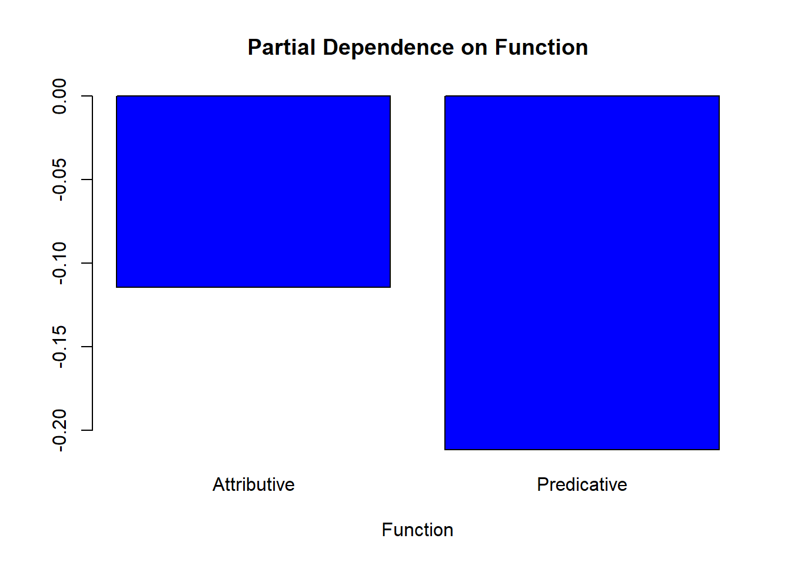
partialPlot(reallyaus_rf2, train, SemanticCategory, 1)
partialPlot(reallyaus_rf2, train, Gender, 1)
# extract tree
getTree(reallyaus_rf2, 1, labelVar = T)## left daughter right daughter split var split point status
## 1 2 3 Gradabilty 3.0000 1
## 2 4 5 SemanticCategory 1.0000 1
## 3 6 7 Priming 1.0000 1
## 4 8 9 AudienceSize 1.0000 1
## 5 10 11 Gender 1.0000 1
## 6 12 13 Adjective 22.0000 1
## 7 14 15 Age 1.0000 1
## 8 0 0 <NA> 0.0000 -1
## 9 0 0 <NA> 0.0000 -1
## 10 0 0 <NA> 0.0000 -1
## 11 16 17 Function 1.0000 1
## 12 18 19 Adjective 2.0000 1
## 13 20 21 Freq 1.2295 1
## 14 22 23 Emotionality 2.0000 1
## 15 0 0 <NA> 0.0000 -1
## 16 0 0 <NA> 0.0000 -1
## 17 24 25 Adjective 8.0000 1
## 18 26 27 Age 3.0000 1
## 19 28 29 Adjective 4.0000 1
## 20 30 31 Function 1.0000 1
## 21 32 33 AudienceSize 1.0000 1
## 22 34 35 Freq 2.8177 1
## 23 36 37 Freq 11.6575 1
## 24 0 0 <NA> 0.0000 -1
## 25 38 39 Gradabilty 1.0000 1
## 26 0 0 <NA> 0.0000 -1
## 27 0 0 <NA> 0.0000 -1
## 28 40 41 Age 1.0000 1
## 29 42 43 ConversationType 1.0000 1
## 30 44 45 Emotionality 1.0000 1
## 31 46 47 AudienceSize 1.0000 1
## 32 48 49 Age 2.0000 1
## 33 50 51 SemanticCategory 2.0000 1
## 34 0 0 <NA> 0.0000 -1
## 35 52 53 Freq 5.7459 1
## 36 54 55 Emotionality 1.0000 1
## 37 56 57 AudienceSize 1.0000 1
## 38 0 0 <NA> 0.0000 -1
## 39 58 59 Freq 0.6844 1
## 40 60 61 ConversationType 1.0000 1
## 41 62 63 AudienceSize 1.0000 1
## 42 0 0 <NA> 0.0000 -1
## 43 64 65 AudienceSize 1.0000 1
## 44 66 67 Gender 1.0000 1
## 45 68 69 Emotionality 2.0000 1
## 46 70 71 Freq 0.7032 1
## 47 72 73 SemanticCategory 3.0000 1
## 48 74 75 ConversationType 1.0000 1
## 49 0 0 <NA> 0.0000 -1
## 50 76 77 Emotionality 2.0000 1
## 51 0 0 <NA> 0.0000 -1
## 52 0 0 <NA> 0.0000 -1
## 53 0 0 <NA> 0.0000 -1
## 54 78 79 AudienceSize 1.0000 1
## 55 0 0 <NA> 0.0000 -1
## 56 0 0 <NA> 0.0000 -1
## 57 0 0 <NA> 0.0000 -1
## 58 0 0 <NA> 0.0000 -1
## 59 0 0 <NA> 0.0000 -1
## 60 0 0 <NA> 0.0000 -1
## 61 0 0 <NA> 0.0000 -1
## 62 0 0 <NA> 0.0000 -1
## 63 0 0 <NA> 0.0000 -1
## 64 80 81 Gender 1.0000 1
## 65 0 0 <NA> 0.0000 -1
## 66 0 0 <NA> 0.0000 -1
## 67 0 0 <NA> 0.0000 -1
## 68 82 83 ConversationType 1.0000 1
## 69 0 0 <NA> 0.0000 -1
## 70 0 0 <NA> 0.0000 -1
## 71 84 85 Age 1.0000 1
## 72 0 0 <NA> 0.0000 -1
## 73 0 0 <NA> 0.0000 -1
## 74 0 0 <NA> 0.0000 -1
## 75 0 0 <NA> 0.0000 -1
## 76 0 0 <NA> 0.0000 -1
## 77 0 0 <NA> 0.0000 -1
## 78 0 0 <NA> 0.0000 -1
## 79 86 87 SemanticCategory 2.0000 1
## 80 88 89 Function 1.0000 1
## 81 0 0 <NA> 0.0000 -1
## 82 90 91 Freq 0.9945 1
## 83 0 0 <NA> 0.0000 -1
## 84 92 93 Gender 1.0000 1
## 85 94 95 SemanticCategory 8.0000 1
## 86 0 0 <NA> 0.0000 -1
## 87 96 97 Freq 1.6575 1
## 88 0 0 <NA> 0.0000 -1
## 89 0 0 <NA> 0.0000 -1
## 90 98 99 SemanticCategory 1.0000 1
## 91 0 0 <NA> 0.0000 -1
## 92 0 0 <NA> 0.0000 -1
## 93 0 0 <NA> 0.0000 -1
## 94 0 0 <NA> 0.0000 -1
## 95 0 0 <NA> 0.0000 -1
## 96 0 0 <NA> 0.0000 -1
## 97 0 0 <NA> 0.0000 -1
## 98 0 0 <NA> 0.0000 -1
## 99 0 0 <NA> 0.0000 -1
## prediction
## 1 <NA>
## 2 <NA>
## 3 <NA>
## 4 <NA>
## 5 <NA>
## 6 <NA>
## 7 <NA>
## 8 1
## 9 0
## 10 0
## 11 <NA>
## 12 <NA>
## 13 <NA>
## 14 <NA>
## 15 1
## 16 0
## 17 <NA>
## 18 <NA>
## 19 <NA>
## 20 <NA>
## 21 <NA>
## 22 <NA>
## 23 <NA>
## 24 0
## 25 <NA>
## 26 1
## 27 0
## 28 <NA>
## 29 <NA>
## 30 <NA>
## 31 <NA>
## 32 <NA>
## 33 <NA>
## 34 1
## 35 <NA>
## 36 <NA>
## 37 <NA>
## 38 0
## 39 <NA>
## 40 <NA>
## 41 <NA>
## 42 1
## 43 <NA>
## 44 <NA>
## 45 <NA>
## 46 <NA>
## 47 <NA>
## 48 <NA>
## 49 0
## 50 <NA>
## 51 0
## 52 0
## 53 1
## 54 <NA>
## 55 0
## 56 1
## 57 0
## 58 0
## 59 0
## 60 1
## 61 1
## 62 1
## 63 0
## 64 <NA>
## 65 1
## 66 0
## 67 1
## 68 <NA>
## 69 0
## 70 0
## 71 <NA>
## 72 1
## 73 0
## 74 0
## 75 1
## 76 1
## 77 0
## 78 0
## 79 <NA>
## 80 <NA>
## 81 0
## 82 <NA>
## 83 0
## 84 <NA>
## 85 <NA>
## 86 0
## 87 <NA>
## 88 0
## 89 0
## 90 <NA>
## 91 0
## 92 0
## 93 1
## 94 0
## 95 1
## 96 0
## 97 1
## 98 1
## 99 1# mds plot
MDSplot(reallyaus_rf2, test$really)
6.2 Example 2:
# detach partykit
detach("package:partykit", unload=TRUE)
# load package party
library(party)
# prepare data
rfd <- reallyaus
# set seed
set.seed(333)
# create initial model
reallyaus.rf <- cforest(really ~ Age + Adjective + Function + Priming + Gender +
ConversationType + AudienceSize + Freq +
Gradabilty + SemanticCategory + Emotionality,
data = rfd, controls = cforest_unbiased(ntree = 50, mtry = 3))
# determine importance of factors
reallyaus.varimp <- varimp(reallyaus.rf, conditional = T)
round(reallyaus.varimp, 3)## Age Adjective Function Priming
## 0.001 0.005 0.012 0.000
## Gender ConversationType AudienceSize Freq
## 0.002 0.003 0.002 0.011
## Gradabilty SemanticCategory Emotionality
## 0.000 0.004 0.001# plot result
dotchart(sort(reallyaus.varimp), pch = 20, main = "Conditional importance of variables")# load library
library(Hmisc)
# evaluate random forst
reallyaus.rf.pred <- unlist(treeresponse(reallyaus.rf))[c(FALSE,TRUE)]
somers2(reallyaus.rf.pred, as.numeric(rfd$really) - 1)## C Dxy n Missing
## 0.8069 0.6138 314.0000 0.0000## C Dxy n Missing
##0.8119422 0.6238843 314.0000000 0.0000000 6.3 Example 3:
# RANDOM FOREST III
# load library
library(party)
# create data
randomforestdata <- reallyaus
cf1 <- cforest(really ~ . , data= randomforestdata, control=cforest_unbiased(mtry=2,ntree=100)) # fit the random forest
varimp(cf1) # get variable importance, based on mean decrease in accuracy## Age Adjective Function Priming
## 0.0013913 0.0169565 0.0082609 0.0008696
## Gender ConversationType AudienceSize Freq
## 0.0053043 0.0046087 0.0040870 0.0253043
## Gradabilty SemanticCategory Emotionality
## 0.0031304 0.0032174 0.0097391varimp(cf1, conditional=TRUE) # conditional=True, adjusts for correlations between predict## Age Adjective Function Priming
## 0.00034783 0.00834783 0.00582609 -0.00191304
## Gender ConversationType AudienceSize Freq
## 0.00295652 0.00069565 0.00252174 0.01139130
## Gradabilty SemanticCategory Emotionality
## 0.00008696 0.00008696 0.00086957varimpAUC(cf1) # more robust towards class imbalance.## Age Adjective Function Priming
## 0.0056743 0.0319284 0.0116915 0.0006288
## Gender ConversationType AudienceSize Freq
## 0.0108261 0.0076496 0.0093993 0.0415649
## Gradabilty SemanticCategory Emotionality
## 0.0085987 0.0060204 0.0077188par(mar = c(5, 8, 4, 2) + 0.1)
plot(y = 1:length(varimpAUC(cf1)), x = varimpAUC(cf1)[order(varimpAUC(cf1))],
axes = F, ann = F, pch = 20, xlim = c(-0.01, 0.05), main = "Predictor Importance")
axis(1, at = seq(-0.01, 0.05, 0.005), seq(-0.01, 0.05, 0.005))
axis(2, at = 1:length(varimpAUC(cf1)), names(varimpAUC(cf1))[order(varimpAUC(cf1))], las = 2)
grid()
box()par(mar = c(5, 4, 4, 2) + 0.1)7 Boruta
Boruta (Kursa & Rudnicki 2010, 2018) is a variable selection procedure and it represents an extension of random forest analyses (cf. Breiman 2001; Tagliamonte & Baayen 2012). The name “Boruta” is derived from a demon in Slavic mythology who dwelled in pine forests. Boruta is an alternative to regression modelling that is better equipped to handle small data sets because it uses a distributional approach during which hundreds of (random) forests are grown from permutated data sets. This means that Boruta outperforms random forest analyses because it does not provide merely a single value for each predictor but a distribution of values leading to higher reliability.
The Boruta analysis consists out of five steps.
In a first step, the Boruta algorithm copies the data set and adds randomness to the data by (re-)shuffling data points and thereby creating randomized variables. These randomized variables are referred to as shadow features.
Secondly, a random forest classifier is trained on the extended data set.
In a third step, a feature importance measure (Mean Decrease Accuracy represented by z-scores) is calculated to determine the relative importance of all predictors (both original or real variables and the randomized shadow features).
In the next step, it is checked at each iteration of the process whether a real predictor has a higher importance compared with the best shadow feature. The algorithm keeps track of the performance of the original variables by storing whether they outperformed the best shadow feature or not in a vector.
In the fifth step, predictors that did not outperform the best shadow feature are removed and the process continues without them. After a set number of iterations, or if all the variables have been either confirmed as outperforming the best shadow feature, the algorithm stops.
Despite its obvious advantages of Boruta over random forest analyses and regression modelling, it can neither handle multicollinearity not hierarchical data structures where data points are nested or grouped by a given predictor (as is the case in the present analysis as data points are grouped by adjective type). As Boruta is a variable selection procedure, it is also limited in the sense that it provides information on which predictors to include and how good these predictors are (compared to the shadow variables) while it is neither able to take hierarchical data structure into account, nor does it provide information about how one level of a factor compares to other factors. In other words, Boruta shows that a predictor is relevant and how strong it is but it does not provide information on how the likelihood of an outcome being used differs between variable levels, for instance between men and women.
8 Boruta in R
We begin by preparing the session. In a first step, we load the necessary library and the data.
# load library
library(Boruta)
# create dada for boruta
borutadata <- reallyaus
# run 1
boruta.ampaus <- Boruta(really~.,data=borutadata)
print(boruta.ampaus)## Boruta performed 99 iterations in 5.979 secs.
## 3 attributes confirmed important: Adjective, Freq, Function;
## 3 attributes confirmed unimportant: Age, Priming,
## SemanticCategory;
## 5 tentative attributes left: AudienceSize, ConversationType,
## Emotionality, Gender, Gradabilty;getConfirmedFormula(boruta.ampaus)## really ~ Adjective + Function + Freq
## <environment: 0x0000000009e95958>plot(boruta.ampaus, cex = .5)plotImpHistory(boruta.ampaus)
# remove superfluous variables
borutadata$Emotionality <- NULL
borutadata$Priming <- NULL
borutadata$Age <- NULL
borutadata$SemanticCategory <- NULL
# run2
boruta.ampaus <- Boruta(really~.,data=borutadata)
print(boruta.ampaus)## Boruta performed 99 iterations in 5.245 secs.
## 4 attributes confirmed important: Adjective, Freq, Function,
## Gradabilty;
## No attributes deemed unimportant.
## 3 tentative attributes left: AudienceSize, ConversationType,
## Gender;getConfirmedFormula(boruta.ampaus)## really ~ Adjective + Function + Freq + Gradabilty
## <environment: 0x000000000d739ba0>plot(boruta.ampaus, cex = .75)plotImpHistory(boruta.ampaus)getConfirmedFormula(boruta.ampaus)## really ~ Adjective + Function + Freq + Gradabilty
## <environment: 0x0000000010193d08>par(mar = c(10, 8, 4, 2) + 0.1)
plot(boruta.ampaus, cex.axis=.75, las=2, xlab="", ylab = "", cex = .75,
col = c("grey50", "grey50", "grey50", "grey50", "grey50", "grey50", "grey50","grey90","grey90","grey90"))
abline(v = 3.5, lty = "dashed")
mtext("Predictors", 1, line = 8, at = 7, cex = 1)
mtext("Control", 1, line = 8, at = 2, cex = 1)
mtext("Importance", 2, line = 2.5, at = 2.5, cex = 1, las = 0)par(mar = c(5, 4, 4, 2) + 0.1)plotImpHistory(boruta.ampaus)References
Achen, Christopher H. 1982. Interpreting and Using Regression. Vol. 29. Sage.
Baayen, R Harald. 2008. Analyzing Linguistic Data. a Practical Introduction to Statistics Using R. Cambridge: Cambridge University press.
Bortz, Jürgen. 2006. Statistik: Für Human-Und Sozialwissenschaftler. Springer-Verlag.
Bowerman, Bruce L, and Richard T O’Connell. 1990. Linear Statistical Models: An Applied Approach. Boston: PWS-Kent.
Crawley, Michael J. 2005. Statistics: An Introduction Using R. 2005. Chichester, West Sussex: John Wiley & Sons.
———. 2012. The R Book. John Wiley & Sons.
Faraway, Julian J. 2002. Practical Regression and Anova Using R. University of Bath.
Field, Andy, Jeremy Miles, and Zoe Field. 2012. Discovering Statistics Using R. Sage.
Green, Samuel B. 1991. “How Many Subjects Does It Take to Do a Regression Analysis.” Multivariate Behavioral Research 26 (3). Taylor & Francis: 499–510.
Gries, Stefan Th. 2009. Statistics for Linguistics Using R: A Practical Introduction. Berlin & New York: Mouton de Gruyter.
Menard, Scott. 1995. Applied Logistic Regression Analysis: Sage University Series on Quantitative Applications in the Social Sciences. Thousand Oaks, CA: Sage.
Myers, Raymond H. 1990. Classical and Modern Regression with Applications. Vol. 2. Duxbury Press Belmont, CA.
Szmrecsanyi, Benedikt. 2006. Morphosyntactic Persistence in Spoken English: A Corpus Study at the Intersection of Variationist Sociolinguistics, Psycholinguistics, and Discourse Analysis. Berlin & New York: Walter de Gruyter.
Wilcox, Rand R. 2009. Basic Statistics: Understanding Conventional Methods and Modern Insights. Oxford University Press.
Zuur, Alain F., Elena N. Ieno, and Chris S. Elphick. 2010. “A Protocol for Data Exploration to Avoid Common Statistical Problems.” Methods in Ecology and Evolution 1 (1): 3–14.